<!doctype html>
<html lang="en">
<head>
  <meta charset="utf-8">
  <meta name="viewport" content="width=device-width, initial-scale=1">
  <title>arxiv digest — 2026-08-22</title>
  <style>
:root {
  --bg: #ffffff;
  --fg: #1f2328;
  --muted: #59636e;
  --border: #d0d7de;
  --card: #f6f8fa;
  --link: #0969da;
}
body {
  max-width: 980px;
  margin: 0 auto;
  padding: 2rem 1rem 5rem;
  font-family: -apple-system, BlinkMacSystemFont, "Segoe UI", Helvetica, Arial, sans-serif;
  line-height: 1.55;
  color: var(--fg);
  background: var(--bg);
}
a { color: var(--link); }
img { max-width: 100%; height: auto; }
pre, code { background: var(--card); border-radius: 6px; }
pre { padding: 1rem; overflow-x: auto; }
blockquote { border-left: 4px solid var(--border); padding-left: 1rem; color: var(--muted); }
details { margin: 0.6rem 0; }
summary { cursor: pointer; font-weight: 600; }
.paper-figures-scroll {
  display: flex;
  gap: 1rem;
  overflow-x: auto;
  overscroll-behavior-x: contain;
  padding: 0.75rem 0.25rem 1rem;
  margin: 1rem 0 1.25rem;
  border-top: 1px solid var(--border);
  border-bottom: 1px solid var(--border);
  scroll-snap-type: x proximity;
}
.paper-figure-card {
  flex: 0 0 min(260px, 72vw);
  scroll-snap-align: start;
  background: var(--card);
  border: 1px solid var(--border);
  border-radius: 12px;
  padding: 0.55rem;
}
.paper-figure-card img {
  display: block;
  width: 100%;
  max-height: 240px;
  object-fit: contain;
  background: white;
  border-radius: 8px;
}
.paper-figure-caption {
  display: block;
  margin-top: 0.5rem;
  color: var(--muted);
  font-size: 0.85rem;
}
.figure-strip-hint {
  color: var(--muted);
  font-size: 0.9rem;
  margin-bottom: -0.3rem;
}
</style>
  <!-- MathJax: renders $...$ inline math and $$...$$ display math, plus
       \(...\) and \[...\]. Loaded from the official CDN; works offline
       once cached. Configured to skip code/pre blocks so arxiv IDs that
       look like dollar amounts don't get mangled. -->
  <script>
    window.MathJax = {
      tex: {
        inlineMath: [['$', '$'], ['\\(', '\\)']],
        displayMath: [['$$', '$$'], ['\\[', '\\]']],
        processEscapes: true,
        processEnvironments: true
      },
      options: {
        skipHtmlTags: ['script', 'noscript', 'style', 'textarea', 'pre', 'code'],
        ignoreHtmlClass: 'tex2jax_ignore',
        processHtmlClass: 'tex2jax_process'
      }
    };
  </script>
  <script id="MathJax-script" async
    src="https://cdn.jsdelivr.net/npm/mathjax@3/es5/tex-chtml.js"></script>
</head>
<body>
<header style="background-color: #333; color: white; padding: 15px; margin-bottom: 20px;">
  <h1 style="margin: 0; font-size: 24px;">
    <a href="https://ochelpan.github.io/arXiv_clean/" style="color: white; text-decoration: none;">Main</a>
  </h1>
</header>

<h1>Daily arXiv Report</h1>

<hr>
<p>
<a href="index.html">← Index</a>
 · <a href="papers_04.html">← Previous</a> · <a href="papers_06.html">Next →</a>
</p>
<hr>

<h2>Papers 81–100</h2>
<p><a id="paper-2608.20001"></a></p>
<h3 id="bayesian-inference-and-retrodiction-for-faithful-states-on-von-neumann-algebras"><a href="http://arxiv.org/abs/2608.20001v1">Bayesian inference and retrodiction for faithful states on von Neumann algebras</a></h3>
<p><strong>Authors:</strong> Pradyut Karmakar, Arthur J. Parzygnat<br>
<strong>Type:</strong> theory · <strong>Category:</strong> other · <strong>PDF:</strong> <a href="https://arxiv.org/pdf/2608.20001v1">https://arxiv.org/pdf/2608.20001v1</a><br>
<strong>Analysis basis:</strong> full PDF text, analyzed in chunks
<strong>Topic relevance:</strong> <code>quantum measurements</code> <strong>2/5</strong></p>
<div class="figure-strip-hint">↔ Scroll figures horizontally</div>
<div class="paper-figures-scroll">
<figure class="paper-figure-card">
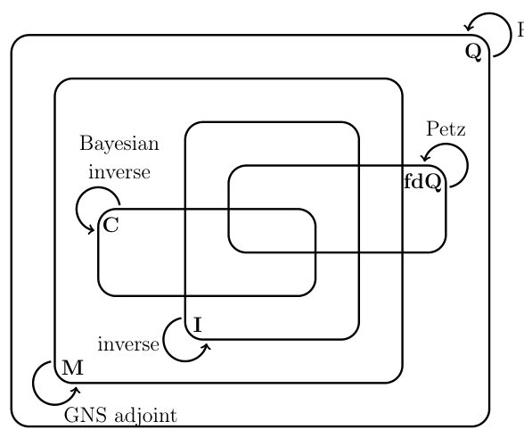
<figcaption class="paper-figure-caption"><b>Fig 1.</b> Figure 1: A diagram of the categories used in this paper and endofunctors on them. All of these categories are defined in the paper; briefly, C is a category of classical systems and stochastic (discrete-time) evolution, Q is a category of quantum systems and quantum channels, I is a cate- gory of invertible dynamics (morphisms are isomorphisms), fdQ is a category of finite-dimensional quantum systems and quantum channels, and M is a category of Markov maps (certain covariant evolutions). Each containment signifies a subcategory and the endofunctor specializes to the one provided on that subcategory. For example, the endofunctor labelled as “Petz” on Q, which is the Petz retrodiction...</figcaption>
</figure>
</div>

<p><strong>Summary.</strong> This work mathematically formalizes quantum retrodiction by extending concepts from finite dimensions to infinite-dimensional von Neumann algebras. It uses category theory to show that the Petz recovery map satisfies deep structural axioms, suggesting that quantum Bayesian inference is a structural necessity rather than just an algorithmic tool. This advances the mathematical foundations of quantum information theory.</p>
<p><strong>Why it may be interesting.</strong> It provides a highly abstract, foundational mathematical framework for understanding quantum inference and time-reversal symmetry, connecting it to fundamental algebraic structures.</p>
<details>
<summary>Detailed structure</summary>
<p><strong>Main problem.</strong> The paper extends the structural definition of retrodiction, typically used in Bayesian inference, from finite-dimensional quantum systems to the infinite-dimensional setting using von Neumann algebras.</p>
<p><strong>Main result.</strong> It establishes that the Petz recovery map satisfies functoriality axioms on the category of von Neumann algebras with normal faithful states, suggesting a deep structural necessity for quantum Bayesian inversion.</p>
<p><strong>Method.</strong> The authors employ category theory to define retrodiction structurally and utilize the Petz recovery map, formalizing concepts like the KMS inner product and functoriality axioms in infinite dimensions.</p>
<p><strong>Model / system.</strong> The mathematical framework involves general von Neumann algebras ($A$) equipped with a normal faithful state ($\omega$), which models quantum systems with potentially infinite degrees of freedom.</p>
<p><strong>Key observables.</strong> The KMS inner product $\langle\langle \cdot, \cdot 
angle
angle_\omega$, the Petz recovery map, and the functorial structure relating classical and quantum inference.</p>
<p><strong>Important parameters / regimes.</strong> The structure depends on the choice of the faithful state $\omega$ and the properties of the modular conjugation operator $J$.</p>
<p><strong>Assumptions / limitations.</strong> The analysis is built upon the assumption that the Petz recovery map defines a functor, though the paper leaves open whether this characterization is unique.</p>
<p><strong>Figures summary.</strong> Figure 1 summarizes the relationship between various categories (Classical, Quantum, etc.) and the endofunctors (Bayesian inverse, Petz) connecting them.</p>
<p><strong>Paper structure.</strong> The paper first reviews the Petz map in infinite dimensions, then develops the KMS inner product, and finally formalizes the structural axioms of retrodiction using category theory to characterize the Petz map.</p>
</details>
<details>
<summary>Abstract</summary>
<p>Retrodiction is the act of inferring a cause from its effects, the most common example of which is Bayesian inference. Retrodiction can be defined by its structural process-theoretic properties, which are mathematically captured by category theory. This categorical definition of retrodiction has recently been shown to potentially isolate the Petz recovery map as a unique universal candidate for quantum Bayesian inference. This paper extends these results to the infinite-dimensional setting on von Neumann algebras. In the process, we provide a pedagogical review of the Petz recovery map in infinite dimensions and its relation to the more commonly used expression in the finite-dimensional setting. We formalize the open question as to whether these categorical axioms for retrodiction do in fact uniquely characterize the Petz recovery map. If such a characterization holds, this would show that Bayesian inversion and the Petz recovery map are structural necessities and not simply useful algorithms for classical and quantum inference.</p>
</details>
<p><sub><a href="#top">↑ back to top</a></sub></p>

<p><a id="paper-2608.20136"></a></p>
<h3 id="boltzmann-counting-in-hilbert-space"><a href="http://arxiv.org/abs/2608.20136v1">Boltzmann counting in Hilbert space</a></h3>
<p><strong>Authors:</strong> Raúl O. Vallejos, Isadora Veeren, Frederico Brito, Fernando de Melo<br>
<strong>Type:</strong> theory · <strong>Category:</strong> statistical mechanics · <strong>PDF:</strong> <a href="https://arxiv.org/pdf/2608.20136v1">https://arxiv.org/pdf/2608.20136v1</a><br>
<strong>Analysis basis:</strong> full PDF text, analyzed in chunks
<strong>Topic relevance:</strong> <code>quantum measurements</code> <strong>2/5</strong></p>
<div class="figure-strip-hint">↔ Scroll figures horizontally</div>
<div class="paper-figures-scroll">
<figure class="paper-figure-card">
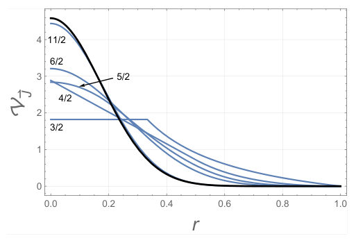
<figcaption class="paper-figure-caption"><b>Fig 1.</b> FIG. 1. Comparison between the exact distributions V ⃗ J (blue) and the Gaussian approximation (black). Exact curves correspond to j = 3/2, 4/2, 5/2, 6/2, 11/2, with dimensions D = 4, 5, 6, 7, 12, respectively. The Gaussian fit uses the unidimensional normaliza- tion of the radial profile, so that its width parameter satisfies σ2 = 1/[3(D −1)]. Gaussianity of the exact curves grows with D.</figcaption>
</figure>
<figure class="paper-figure-card">

<figcaption class="paper-figure-caption"><b>Fig 2.</b> FIG. 2. Regularized volume of the set of states compatible with a subspace of dimension M in an N-dimensional Hilbert space, shown as a line. The corresponding numerical results obtained by rejection sampling are shown as dots.</figcaption>
</figure>
<figure class="paper-figure-card">
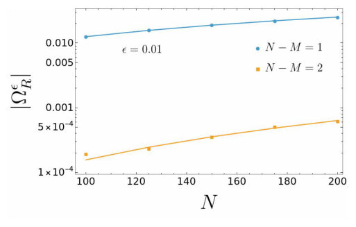
<figcaption class="paper-figure-caption"><b>Fig 3.</b> Figure 2 shows the regularized volume as function of the to- tal dimension N for two different values of co-dimension (N −M), together with the corresponding numerical re- sults obtained by rejection sampling. As the value of the co-dimension increases, i.e., the number of constraints gets larger, the volume rapidly goes to zero, turning a numerical evaluation impractical. As an alternative to (28), we could have written</figcaption>
</figure>
<figure class="paper-figure-card">
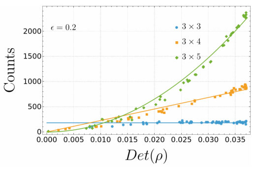
<figcaption class="paper-figure-caption"><b>Fig 4.</b> FIG. 3. Numerical analysis of the volume of local states. We evaluate how well simulations fit the prediction given by Eq. 54. We consid- ered a set of random local qutrit states. For each ϱ in this set, we sampled 100,000 microscopic states |ψ⟩∈H3 ⊗HE and checked how many of those satisfied the condition |tr(|ψ⟩⟨ψ| gi ⊗1E) − tr(ϱ gi)| &lt; ϵ for all i ∈[8], with gi the usual i-th Gell-Mann matrix, and we set ϵ = 0.2. The count of microscopic states obeying these conditions provides an estimate of the volume VΛPT(ϱ). By plotting the results against det(ϱ), we confirm the expected behavior: for dE = 3 (in blue), the volume of uncertainty is constant, as dE = dS; for dE = 4, it grows linearly...</figcaption>
</figure>
</div>

<p><strong>Summary.</strong> This paper develops a geometric entropy by defining it as the logarithm of the volume of pure states compatible with physical constraints in Hilbert space. It extends classical Boltzmann counting to the quantum realm by analyzing constraints like fixed expectation values and subsystem projections. This framework offers a complementary measure of quantum ignorance beyond traditional entropy definitions.</p>
<p><strong>Why it may be interesting.</strong> This work provides a novel, geometric measure of quantum uncertainty that complements standard entropy measures (like von Neumann entropy) by quantifying the volume of the accessible microscopic state space.</p>
<details>
<summary>Detailed structure</summary>
<p><strong>Main problem.</strong> To extend Boltzmann's counting principle, which relates entropy to the volume of compatible microstates, to the quantum mechanical setting.</p>
<p><strong>Main result.</strong> The authors introduce a geometric entropy defined as the logarithm of the Hilbert-space volume of pure states compatible with given constraints, providing a measure of quantum ignorance.</p>
<p><strong>Method.</strong> The method involves defining the volume using the Haar measure and employing regularization techniques (epsilon-smearing) to handle constraints that define sets of measure zero.</p>
<p><strong>Model / system.</strong> The system is a quantum state described by a pure state $|\psi
angle$ in a Hilbert space $\mathcal{H}_D$. Constraints include subspace restrictions, fixed expectation values of observables, and coarse-graining maps.</p>
<p><strong>Key observables.</strong> Geometric Entropy ($S_Q$), Hilbert-space volume of compatible states ($\Omega$), and expectation values ($\langle\psi|A_i|\psi
angle$).</p>
<p><strong>Important parameters / regimes.</strong> Hilbert space dimension ($D$), constraint parameters ($\vec{a}$ or $\varrho$), and the regularization parameter ($\epsilon$).</p>
<p><strong>Assumptions / limitations.</strong> The direct volume calculation using the Haar measure fails (zero volume), necessitating the use of $\epsilon$-regularization. The framework relies on defining the volume via delta functions over constraint functions.</p>
<p><strong>Figures summary.</strong> Figure 1 compares exact distributions of expectation values with Gaussian approximations for large dimensions. Figure 2 shows the regularized volume scaling for subspace projections.</p>
<p><strong>Paper structure.</strong> The paper introduces the geometric entropy concept, analyzes three classes of constraints (subspace, expectation values, coarse-graining), develops the mathematical machinery using measure theory and regularization, and derives explicit scaling laws for the resulting volumes.</p>
</details>
<details>
<summary>Abstract</summary>
<p>We introduce a geometric entropy for quantum preparations, defined as the logarithm of the Hilbert-space volume of pure states compatible with a given set of constraints. This construction extends Boltzmann's counting perspective to the quantum setting, where compatible states need not be orthogonal and the relevant notion of "number of states" is naturally replaced by a volume in state space. We analyze three classes of constraints: restriction to a subspace, fixed expectation values, and coarse-grained subsystem descriptions. For representative examples, including subspace projection, spin expectation values, partial trace, and an imperfect detector map, we obtain explicit scaling laws and closed-form expressions for the associated volumes. The resulting framework provides a geometric measure of quantum ignorance at the level of the preparation and complements entropy notions based on density matrices and coarse graining.</p>
</details>
<p><sub><a href="#top">↑ back to top</a></sub></p>

<p><a id="paper-2608.20113"></a></p>
<h3 id="counterexamples-to-the-fractional-coloring-conjecture-for-triply-efficient-shadow-tomography"><a href="http://arxiv.org/abs/2608.20113v1">Counterexamples to the fractional coloring conjecture for triply efficient shadow tomography</a></h3>
<p><strong>Authors:</strong> Jędrzej Stempin, Santiago Llorens, Felix Huber<br>
<strong>Type:</strong> theory · <strong>Category:</strong> quantum information and computing · <strong>PDF:</strong> <a href="https://arxiv.org/pdf/2608.20113v1">https://arxiv.org/pdf/2608.20113v1</a><br>
<strong>Analysis basis:</strong> full PDF text, analyzed in chunks
<strong>Topic relevance:</strong> <code>quantum measurements</code> <strong>2/5</strong></p>
<div class="figure-strip-hint">↔ Scroll figures horizontally</div>
<div class="paper-figures-scroll">
<figure class="paper-figure-card">
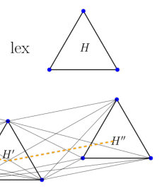
<figcaption class="paper-figure-caption"><b>Fig 1.</b> Figure 1. The lexicographic product of the line graph with the triangle, L3 lex C3. At every vertex of G (a branch), place a copy of H (a leaf). Then connect the vertices among different leaves if and only if their branches are connected.</figcaption>
</figure>
</div>

<p><strong>Summary.</strong> This theoretical paper disproves a conjecture regarding the scaling of the fractional chromatic number for Pauli observables used in quantum state tomography. By constructing specific counterexamples using graph products, the authors show that the required measurement resources scale faster than $O(1/\epsilon^2)$, thereby limiting the efficiency of current shadow tomography algorithms.</p>
<p><strong>Why it may be interesting.</strong> It provides fundamental theoretical limits on the efficiency of quantum state tomography protocols, suggesting that the required measurement resources scale worse than previously conjectured.</p>
<details>
<summary>Detailed structure</summary>
<p><strong>Main problem.</strong> The paper aims to disprove a conjecture relating the fractional chromatic number ($\chi_f$) of the anticommutation graph of Pauli observables to the expectation value threshold ($\epsilon$) in quantum state tomography.</p>
<p><strong>Main result.</strong> The conjecture is false, as the authors construct a family of states and observables where $\chi_f(	ext{B}_\epsilon) \cdot \epsilon^2$ grows unboundedly with the system size parameter $m$.</p>
<p><strong>Method.</strong> The proof involves constructing counterexamples using the lexicographic graph product of graphs (specifically involving the anti-heptagon) to amplify the violation of the conjectured bound.</p>
<p><strong>Model / system.</strong> The system involves quantum states $\varrho$ on $n$ qubits and Pauli observables $P \in \{I, X, Y, Z\}^{\otimes n}$. The structure is analyzed via the anticommutation graph $G$ induced by a set of observables $B_\epsilon(\varrho)$.</p>
<p><strong>Key observables.</strong> Fractional chromatic number ($\chi_f$), expectation values ($   ext{tr}(\varrho P)$), and the $eta$ number ($eta(G)$).</p>
<p><strong>Important parameters / regimes.</strong> The scaling behavior is analyzed in terms of $\epsilon$ and the exponential growth factor derived from the graph invariants $eta(G)/\alpha(G)$.</p>
<p><strong>Assumptions / limitations.</strong> The analysis relies on established graph theory properties, particularly how $\chi_f$ and $eta$ behave under the lexicographic product.</p>
<p><strong>Figures summary.</strong> Figures illustrate the structure of the lexicographic product of graphs, such as $L_3 	ext{ lex } C_3$, and show the anticommutation graph of $C_7$ realized by Pauli strings.</p>
<p><strong>Paper structure.</strong> The paper first defines the problem and the conjecture, then develops the counterexample construction using graph products and the anti-heptagon, culminating in a rigorous lower bound that demonstrates the conjecture's failure.</p>
</details>
<details>
<summary>Abstract</summary>
<p>Fractional graph colorings are useful for the Shadow tomography of Pauli observables. In practice, it is desirable that any experimentally interesting set of Pauli operators has a small fractional chromatic number $χ_{f}$ for its anticommutation graph. Conjecture 13 in King, Gosset, Kothari, and Babbush [PRX Quantum 6, 010336 (2025)] states that if $B_ε(\varrho)$ is the set of Pauli observables having expectation value magnitude at least $ε$ in some given quantum state $\varrho$, then the fractional chromatic number of the anticommutation graph $G$ induced by $B_ε(\varrho)$ is $O(ε^{-2})$. In other words, it asserts that there exists a constant $C$ such that $χ_{f} \cdot ε^2 \leq C$ on all states and graphs. If the conjecture were true, it would imply that there exists a triply efficient Pauli shadow tomography algorithm for {\it any} subset $S$ of Pauli observables, provided that there is also an efficient fractional coloring algorithm for the set $B_ε$. Here we show that the conjecture is false by constructing a family of states and observables for which no finite $C$ satisfying the bound exists. We also give a more general construction relying on the commutation index or $β$ number of a graph. The key ingredient in the proofs can be seen as an instance of the amplification trick, where fractional chromatic numbers, $β$ numbers, and expectation values are amplified through lexicographic graph products.</p>
</details>
<p><sub><a href="#top">↑ back to top</a></sub></p>

<p><a id="paper-2608.19489"></a></p>
<h3 id="fast-algorithms-for-stoquastic-spin-systems"><a href="http://arxiv.org/abs/2608.19489v1">Fast Algorithms for Stoquastic Spin Systems</a></h3>
<p><strong>Authors:</strong> Ryan L. Mann<br>
<strong>Type:</strong> theory · <strong>Category:</strong> statistical mechanics · <strong>PDF:</strong> <a href="https://arxiv.org/pdf/2608.19489v1">https://arxiv.org/pdf/2608.19489v1</a><br>
<strong>Analysis basis:</strong> full PDF text, analyzed in chunks
<strong>Topic relevance:</strong> <code>analog quantum simulation</code> <strong>2/5</strong></p>
<div class="figure-strip-hint">↔ Scroll figures horizontally</div>
<div class="paper-figures-scroll">
<figure class="paper-figure-card">
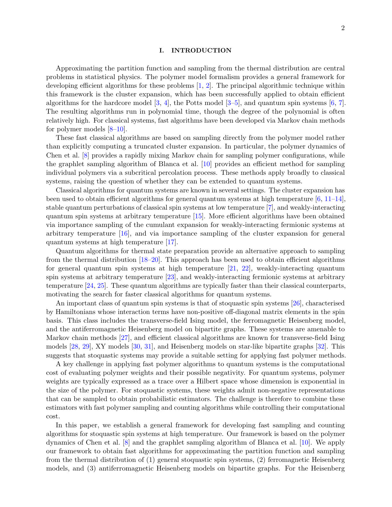
<figcaption class="paper-figure-caption"><b>Fig 1.</b> Low-resolution page preview, page 2</figcaption>
</figure>
<figure class="paper-figure-card">
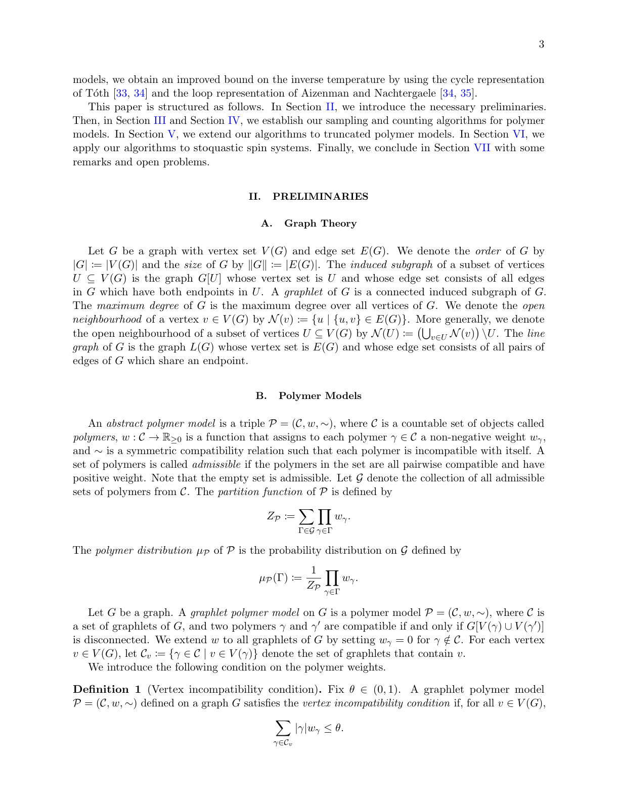
<figcaption class="paper-figure-caption"><b>Fig 2.</b> Low-resolution page preview, page 3</figcaption>
</figure>
<figure class="paper-figure-card">
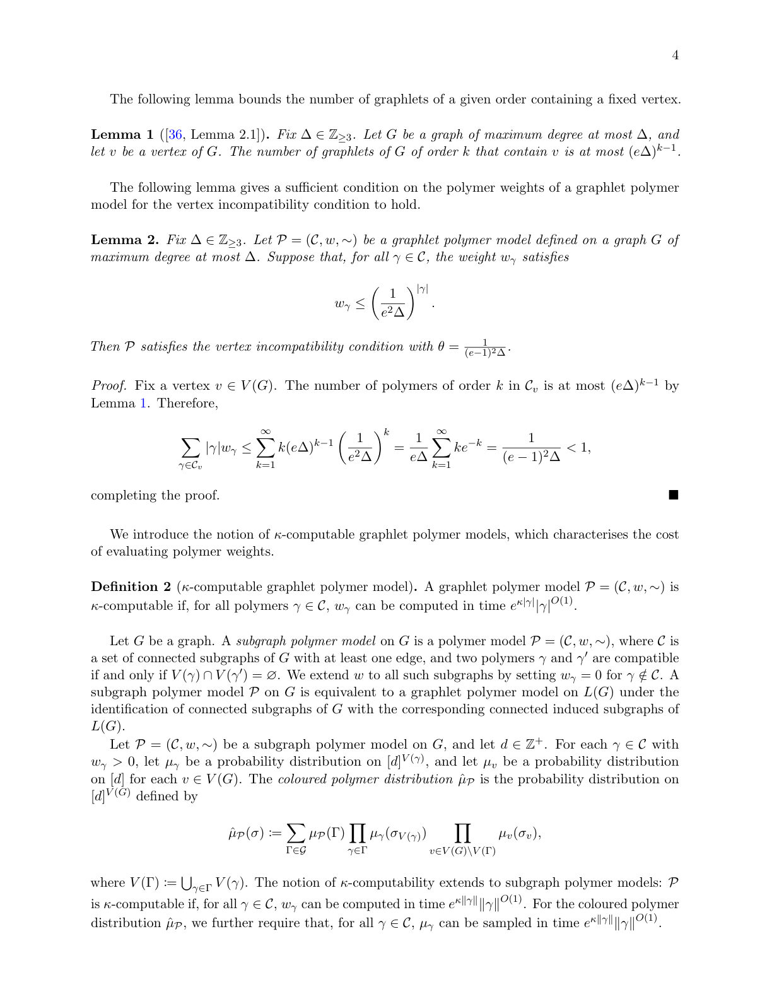
<figcaption class="paper-figure-caption"><b>Fig 3.</b> Low-resolution page preview, page 4</figcaption>
</figure>
<figure class="paper-figure-card">
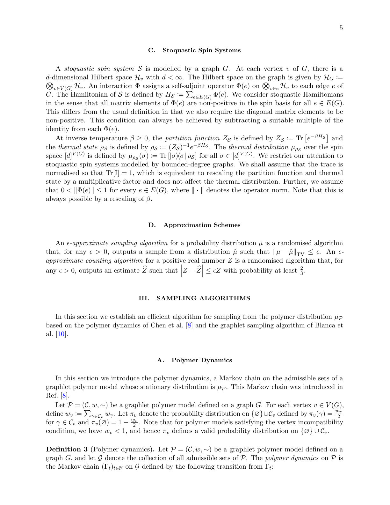
<figcaption class="paper-figure-caption"><b>Fig 4.</b> Low-resolution page preview, page 5</figcaption>
</figure>
<figure class="paper-figure-card">
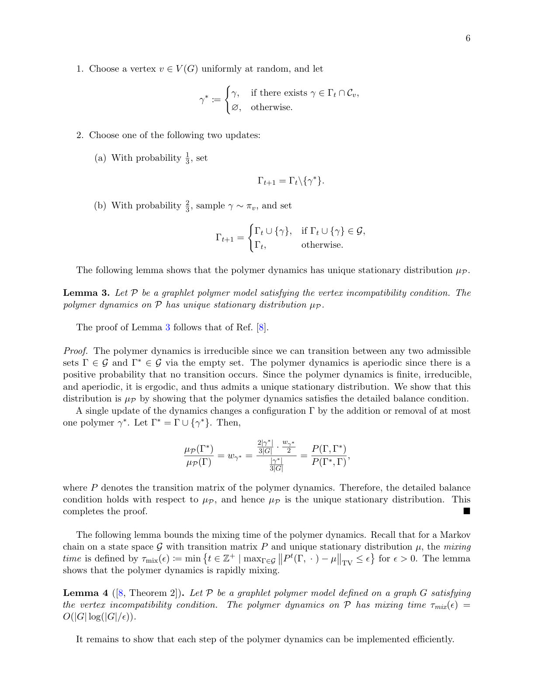
<figcaption class="paper-figure-caption"><b>Fig 5.</b> Low-resolution page preview, page 6</figcaption>
</figure>
</div>

<p><strong>Summary.</strong> This paper presents a general framework to develop fast algorithms for sampling and counting in stoquastic spin systems at high temperatures. By mapping the quantum problem onto a graphlet polymer model, the authors achieve efficient computational bounds for calculating the partition function and sampling the thermal state. This methodology is successfully applied to Heisenberg spin models, providing significant algorithmic advances in quantum statistical mechanics.</p>
<p><strong>Why it may be interesting.</strong> The development of fast, polynomial-time classical algorithms for sampling and counting in quantum spin systems, especially those with non-negative weight structures, is highly relevant for simulating complex many-body quantum models.</p>
<details>
<summary>Detailed structure</summary>
<p><strong>Main problem.</strong> The paper aims to develop fast and efficient algorithms for both sampling and counting observables associated with stoquastic spin systems at high temperatures.</p>
<p><strong>Main result.</strong> Fast algorithms are established for approximating the partition function and sampling the thermal distribution for general stoquastic spin systems, as well as for ferromagnetic and antiferromagnetic Heisenberg models on bipartite graphs.</p>
<p><strong>Method.</strong> The approach combines a general framework based on rapidly mixing Markov chains for polymer models with graphlet sampling algorithms, utilizing probabilistic extensions for computational tractability.</p>
<p><strong>Model / system.</strong> The focus is on stoquastic spin systems defined by a Hamiltonian $H_S = \sum_{e \in E(G)} \Phi(e)$ on a graph $G$. Specific applications include Heisenberg models (ferromagnetic and antiferromagnetic) on bipartite graphs.</p>
<p><strong>Key observables.</strong> The partition function $Z_S = 	ext{Tr}(e^{-eta H_S})$ and the thermal state $
ho_S$, from which the thermal distribution $\mu_{
ho_S}(\sigma)$ is derived.</p>
<p><strong>Important parameters / regimes.</strong> High temperature ($eta$ small), the graph structure $G$, and the inverse temperature $eta$.</p>
<p><strong>Assumptions / limitations.</strong> The framework relies on the stoquastic condition (non-positive matrix elements) and the assumption that the underlying polymer model is $\kappa$-computable.</p>
<p><strong>Paper structure.</strong> The paper first establishes the general framework using polymer dynamics and graphlet sampling. It then applies this framework to derive fast algorithms for general stoquastic systems and specific Heisenberg models, culminating in the proof of tractability via probabilistic polymer models.</p>
</details>
<details>
<summary>Abstract</summary>
<p>We establish a general framework for developing fast sampling and counting algorithms for stoquastic spin systems at high temperature. Our framework is based on a rapidly mixing Markov chain for polymer models and a subcritical percolation process for sampling individual polymers. We apply our framework to obtain fast algorithms for approximating the partition function and sampling from the thermal distribution of (1) general stoquastic spin systems, (2) ferromagnetic Heisenberg models, and (3) antiferromagnetic Heisenberg models on bipartite graphs. For the Heisenberg models, we obtain an improved bound on the inverse temperature by using their respective cycle and loop representations.</p>
</details>
<p><sub><a href="#top">↑ back to top</a></sub></p>

<p><a id="paper-2608.19428"></a></p>
<h3 id="holographic-bit-threads-from-string-diagrammatic-quantum-information-flow"><a href="http://arxiv.org/abs/2608.19428v1">Holographic Bit Threads from String-Diagrammatic Quantum Information Flow</a></h3>
<p><strong>Authors:</strong> Yi-Yu Lin, Song Cheng<br>
<strong>Type:</strong> theory · <strong>Category:</strong> other · <strong>PDF:</strong> <a href="https://arxiv.org/pdf/2608.19428v1">https://arxiv.org/pdf/2608.19428v1</a><br>
<strong>Analysis basis:</strong> full PDF text, analyzed in chunks
<strong>Topic relevance:</strong> <code>quantum measurements</code> <strong>2/5</strong></p>
<div class="figure-strip-hint">↔ Scroll figures horizontally</div>
<div class="paper-figures-scroll">
<figure class="paper-figure-card">
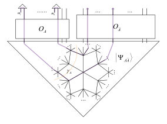
<figcaption class="paper-figure-caption"><b>Fig 1.</b> FIG. 2. QIF picture in a holographic protocol network. (a) The entanglement-network string diagram represents an LOCC protocol in which operations OA and O ¯ A are first ap- plied to the two boundary sides of the bipartite holographic tensor-network state | ψA ¯ A⟩, distilling as many Bell pairs as possible, after which standard teleportation is used to transfer the qubit messages m1, . . . , mk. Due to holographic duality, the network structure of | ψA ¯ A⟩corresponds to a preferred semiclassical geometry, wherein RT surface γA is depicted as the orange dashed line. The QIFs characterizing the transfer of the k qubits are marked in purple. We argue that the por- tions of their trajectories...</figcaption>
</figure>
<figure class="paper-figure-card">
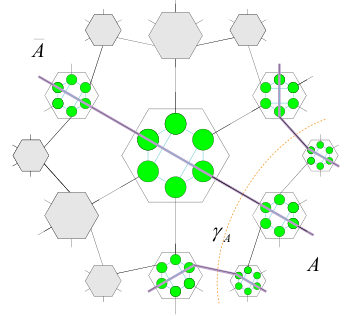
<figcaption class="paper-figure-caption"><b>Fig 2.</b> FIG. 3. Geodesic-like maximal QIF in a HaPPY network. Gray hexagons denote unresolved six-leg AME perfect ten- sors; the remaining cells are expanded into microscopic ZX string diagrams [47, 51], with green nodes denoting ZX spiders and blue dashed edges carrying Hadamard gates. Perfectness fixes only the isometric property associated with the relevant bipartition, not the underlying state vector or its ZX repre- sentation; here we use one particular microscopic choice com- patible with the target trajectories. The purple curves mark the certified QIF trajectories, whose number saturates the capacity of the minimal cut γA shown by the orange dashed curve, and therefore form a geodesic-like...</figcaption>
</figure>
<figure class="paper-figure-card">
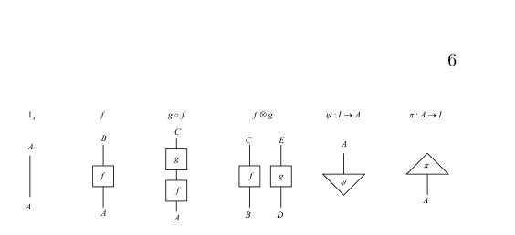
<figcaption class="paper-figure-caption"><b>Fig 3.</b> FIG. 4. Graphical representations of various morphisms in string diagrams.</figcaption>
</figure>
<figure class="paper-figure-card">
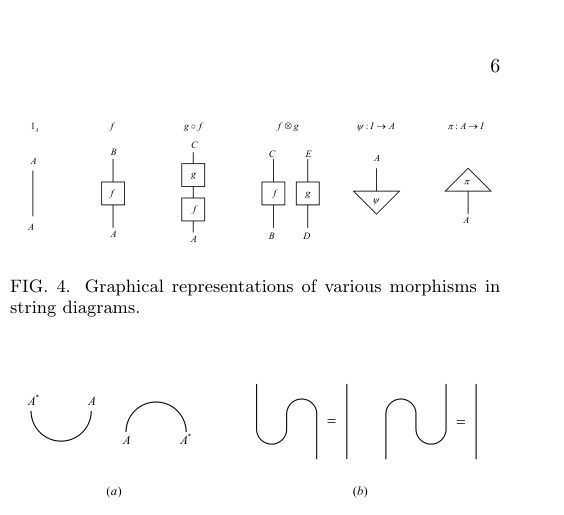
<figcaption class="paper-figure-caption"><b>Fig 4.</b> FIG. 5. (a) The cup and the cap. (b) The snake equations.</figcaption>
</figure>
<figure class="paper-figure-card">
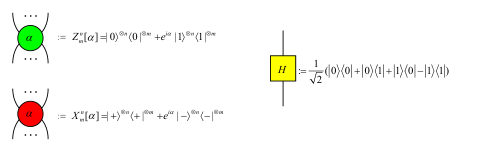
<figcaption class="paper-figure-caption"><b>Fig 5.</b> FIG. 6. Basic generators of the ZX calculus.</figcaption>
</figure>
</div>

<p><strong>Summary.</strong> This work bridges quantum information theory and quantum gravity by interpreting 'bit threads'—structures related to holographic entanglement entropy—through the lens of Quantum Information Flow (QIF). By mapping QIF paths onto holographic tensor networks, the authors demonstrate that QIF naturally satisfies the mathematical constraints of bit threads, offering a process-based explanation for entanglement structure.</p>
<p><strong>Why it may be interesting.</strong> It connects abstract concepts from quantum information theory (QIF, categorical quantum mechanics) to concrete, geometric concepts in quantum gravity/holography (entanglement entropy, minimal surfaces), providing a deep structural understanding of entanglement quantification.</p>
<details>
<summary>Detailed structure</summary>
<p><strong>Main problem.</strong> The paper aims to provide a quantum information-theoretic interpretation for 'bit threads,' structures derived from the minimal-surface formula for holographic entanglement entropy, specifically addressing the issue of their non-uniqueness.</p>
<p><strong>Main result.</strong> The authors show that Quantum Information Flow (QIF) trajectories within holographic tensor networks naturally obey the divergence-free and density-bound conditions defining bit threads, thus providing a process-centered explanation for their existence and non-uniqueness.</p>
<p><strong>Method.</strong> The methodology involves applying Coecke's Quantum Information Flow (QIF) concept from categorical quantum mechanics to holographic tensor networks, analyzing the flow paths using string diagrams (ZX calculus).</p>
<p><strong>Model / system.</strong> The model is based on holographic duality, relating entanglement entropy to minimal surfaces in a bulk geometry, which is discretized into a holographic tensor network structure. The system involves bipartite holographic states and quantum protocols like teleportation.</p>
<p><strong>Key observables.</strong> Entanglement Entropy $S(A)$, Bit Thread Flux, QIF Trajectories, and the capacity of the entanglement bond.</p>
<p><strong>Important parameters / regimes.</strong> The discrete structure of the holographic tensor network (Graph $G=(V, E, c)$) and the bond dimensions.</p>
<p><strong>Assumptions / limitations.</strong> The interpretation relies on viewing the problem from a process-centered viewpoint (CQM), and the analysis is restricted to holographic tensor networks with a preferred discrete geometry.</p>
<p><strong>Figures summary.</strong> Figures illustrate QIF paths in holographic protocol networks, showing how QIFs (e.g., for Bell pair distillation) satisfy the mathematical constraints of bit threads, and demonstrating geodesic-like QIFs in HaPPY disk networks.</p>
<p><strong>Paper structure.</strong> The paper progresses by first defining the mathematical constraints of bit threads, then introducing QIF from CQM, and finally demonstrating that QIF trajectories within the holographic tensor network sector satisfy these constraints, while also discussing the physical implications of QIF non-uniqueness.</p>
</details>
<details>
<summary>Abstract</summary>
<p>Bit threads, arising as the convex dual of the minimal-surface formula for holographic entanglement entropy, are line-like structures with nontrivial bulk trajectories. Their physical picture has long been associated with Bell-pair interpretations, yet the meaning of their detailed trajectories, particularly their nonuniqueness, remains unclear. We propose to apply Coecke's notion of quantum information flow (QIF) in protocol-network geometry, developed within categorical quantum mechanics, to a holographic setup, and show that its trajectories within the discrete holographic bulk---the tensor network---obey the divergence-free and density-bound conditions of bit threads. From this process-centered perspective, bit-thread nonuniqueness becomes natural: for a given resource state, different protocols realizing the same distillation task can give rise to different QIF trajectories. We further analyze stabilizer-type holographic tensor networks using ZX string diagrams and show that QIF trajectories can probe finer entanglement structure beyond the level captured by entanglement entropy.</p>
</details>
<p><sub><a href="#top">↑ back to top</a></sub></p>

<p><a id="paper-2608.20250"></a></p>
<h3 id="logarithmic-depth-compression-of-heisenberg-hamiltonian-simulation-by-fan-out-parallelization-with-built-in-error-detection"><a href="http://arxiv.org/abs/2608.20250v1">Logarithmic depth compression of Heisenberg Hamiltonian simulation by fan-out parallelization, with built-in error detection</a></h3>
<p><strong>Authors:</strong> Artemiy Burov, Clément Javerzac<br>
<strong>Type:</strong> theory · <strong>Category:</strong> quantum information and computing · <strong>PDF:</strong> <a href="https://arxiv.org/pdf/2608.20250v1">https://arxiv.org/pdf/2608.20250v1</a><br>
<strong>Analysis basis:</strong> full PDF text, analyzed in chunks
<strong>Topic relevance:</strong> <code>analog quantum simulation</code> <strong>2/5</strong></p>
<div class="figure-strip-hint">↔ Scroll figures horizontally</div>
<div class="paper-figures-scroll">
<figure class="paper-figure-card">
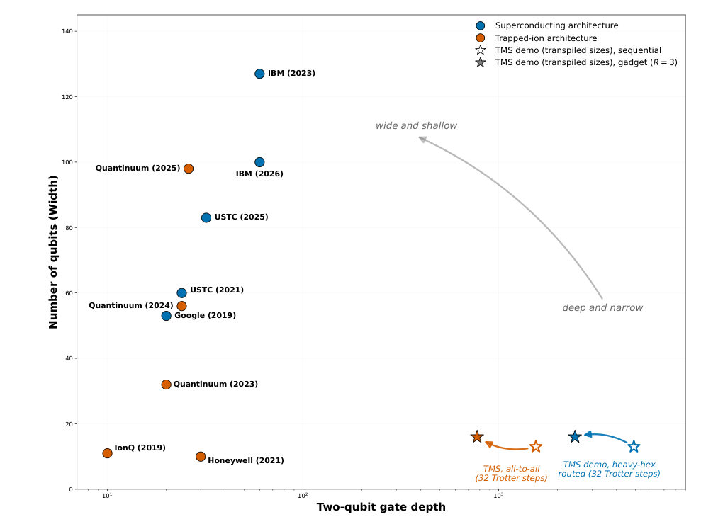
<figcaption class="paper-figure-caption"><b>Fig 1.</b> Figure 1: Circuit width versus two-qubit gate depth for published milestone experiments on quantum devices, together with the transpiled circuit sizes of this work’s demonstration (stars): TMS (29Si(CH3)4, 13 spins) at zero field, second-order product formula with M = 32 Trotter steps. The stars are compiled-and-transpiled circuit sizes, computed classically rather than run on hardware. Device coordinates are the qubit counts and two-qubit-gate depths of the cited experiments (random-circuit- sampling cycles and layers of CNOT or CZ gates for superconducting devices; parallel two-qubit-gate layers for Quantinuum; for IonQ the two-qubit gate count, which for the plotted Bernstein–Vazirani...</figcaption>
</figure>
<figure class="paper-figure-card">
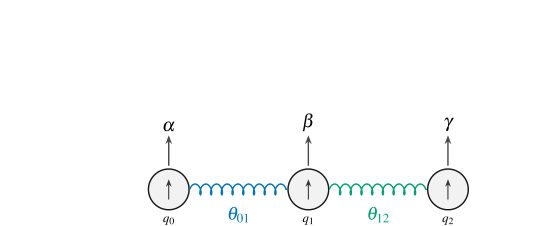
<figcaption class="paper-figure-caption"><b>Fig 2.</b> Figure 2: Example of a 3-spin molecule with chain connec- tivity mapped to qubits {q0, q1, q2} with respective Zeeman frequencies {α, β, γ} and spin-spin coupling parameters θ01 and θ12.</figcaption>
</figure>
<figure class="paper-figure-card">
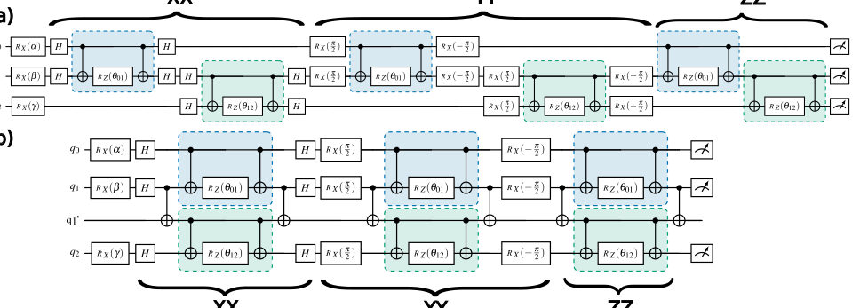
<figcaption class="paper-figure-caption"><b>Fig 3.</b> Figure 3: Not-parallelized (a) and parallelized (b) circuits for chain connectivity, see Eq. 3. Colored blocks correspond to the interaction terms with coefficients θkl (colors in Fig. 2).</figcaption>
</figure>
<figure class="paper-figure-card">
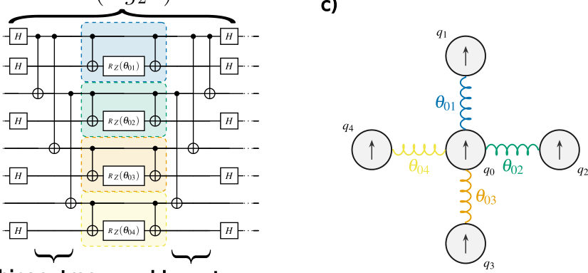
<figcaption class="paper-figure-caption"><b>Fig 4.</b> Figure 4: Four two-qubit operations that share a qubit, executed in sequence (a) and in parallel using the gadget (b), meant to be understood as a part of a larger quantum circuit. The corresponding star-topology molecule (c). Colored blocks correspond to the interaction terms with coefficients θkl.</figcaption>
</figure>
<figure class="paper-figure-card">
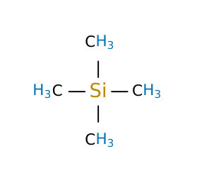
<figcaption class="paper-figure-caption"><b>Fig 5.</b> Figure 6: Tetramethylsilane (TMS). The 29Si nucleus couples identically to the twelve methyl protons (2JSiH = 6.6 Hz), forming an interaction star of hub degree twelve. In the idealized A12X limit the proton–proton couplings commute with the Hamiltonian and the observable and are omitted.</figcaption>
</figure>
</div>

<p><strong>Summary.</strong> This paper presents a novel fan-out-based gadget compiler to simulate Heisenberg Hamiltonians, aiming to reduce the circuit depth bottleneck in NISQ quantum computers. By encoding spins into redundant registers, it parallelizes interactions, achieving significant depth reductions compared to standard sequential compilation. The results demonstrate that this technique offers substantial resource savings, particularly for systems with highly connected hubs.</p>
<p><strong>Why it may be interesting.</strong> This work directly addresses resource estimation and compilation overheads for simulating complex quantum many-body systems, which is crucial for realizing quantum simulation algorithms on near-term hardware.</p>
<details>
<summary>Detailed structure</summary>
<p><strong>Main problem.</strong> The primary challenge is mitigating the constraint of circuit depth in Noisy Intermediate-Scale Quantum (NISQ) computers when simulating spin systems governed by Heisenberg Hamiltonians.</p>
<p><strong>Main result.</strong> A fan-out-based gadget compiler can significantly reduce the two-qubit circuit depth (up to 2.5-fold on all-to-all) compared to sequential product-formula simulations, especially for graphs with high-degree hubs.</p>
<p><strong>Method.</strong> The authors introduce a gadget compiler that encodes each logical spin into a repetition-code register, allowing pairwise interactions to execute in parallel via a logarithmic-depth CNOT fan-out, while simultaneously providing built-in error detection.</p>
<p><strong>Model / system.</strong> The paper simulates Heisenberg-type nuclear magnetic resonance (NMR) Hamiltonians for spin systems, mapping them onto qubit Hamiltonians. The comparison is tested on various connectivity graphs, including star systems (e.g., 13-spin TMS).</p>
<p><strong>Key observables.</strong> Two-qubit depth, circuit volume, per-shot error budget ($\lambda$), and the resulting zero-field NMR spectrum.</p>
<p><strong>Important parameters / regimes.</strong> Interaction graph degree inhomogeneity, device connectivity (heavy-hex, all-to-all), and required error rate improvement (1 to 1.5 orders of magnitude).</p>
<p><strong>Assumptions / limitations.</strong> The comparison is performed under a fixed protocol and uses an extrapolated device-noise model; the gain vanishes for dense, uniform graphs.</p>
<p><strong>Figures summary.</strong> Figures compare circuit width vs. depth for sequential vs. gadget compilation on different hardware topologies; one figure shows the error budget comparison favoring the gadget method, and another illustrates the volume-optimal gain scaling with hub degree.</p>
<p><strong>Paper structure.</strong> The paper first introduces the problem of circuit depth in NISQ simulation. It then details the gadget compiler method, which trades depth for width using redundant registers. The core of the work involves a fixed-protocol resource comparison, transpiling the optimized circuits to superconducting and trapped-ion targets, and finally validating the results by simulating a specific NMR spectrum.</p>
</details>
<details>
<summary>Abstract</summary>
<p>Noisy intermediate-scale quantum computers are constrained by circuit depth, while product-formula simulation of spin systems leads to narrow and deep circuits. Here we introduce a fan-out-based gadget compiler that trades circuit depth for width in simulations of Heisenberg-type nuclear magnetic resonance (NMR) Hamiltonians. Each logical spin is encoded into a small repetition-code register sized by its interaction degree, so that all pairwise interactions of a given Pauli type execute in parallel after a logarithmic-depth CNOT fan-out, and the redundant registers provide error detection for post-selection at no additional algorithmic overhead. The central result is a fixed-protocol resource comparison of the two compilations, transpiled to heavy-hex superconducting and all-to-all trapped-ion targets across a set of NMR spin systems. For interaction graphs with a high-degree hub the volume-optimal schedule halves the two-qubit depth and reduces the volume 1.7-fold for the 13-spin demonstration, which on heavy-hex also lowers the two-qubit gate count, and the depth reduction rises to 2.5-fold on all-to-all for the highest-degree molecule studied. On all-to-all the two-qubit gate count rises for every system, so the volume reduction is a benefit on depth-limited hardware. The gain grows with the degree inhomogeneity of the interaction graph and vanishes for dense uniform graphs, where the optimum is the sequential circuit. We simulate the zero-field NMR spectrum of tetramethylsilane, a 13-spin star system. Under a noise model scaled from a published present-day processor calibration, the shallower gadget circuits match or surpass the sequential compilation only after post-selection on their built-in error detection, once error rates improve by one to one and a half orders of magnitude. We verify the spectra against an independent classical computation.</p>
</details>
<p><sub><a href="#top">↑ back to top</a></sub></p>

<p><a id="paper-2608.19533"></a></p>
<h3 id="quantum-energy-storage-versus-heat-to-work-conversion-in-an-interacting-spin-system"><a href="http://arxiv.org/abs/2608.19533v1">Quantum Energy Storage versus Heat-to-Work Conversion in an Interacting Spin System</a></h3>
<p><strong>Authors:</strong> Omar Bachain, Mohamed Amazioug, Rachid Ahl Laamara<br>
<strong>Type:</strong> theory · <strong>Category:</strong> statistical mechanics · <strong>PDF:</strong> <a href="https://arxiv.org/pdf/2608.19533v1">https://arxiv.org/pdf/2608.19533v1</a><br>
<strong>Analysis basis:</strong> full PDF text, analyzed in chunks
<strong>Topic relevance:</strong> <code>analog quantum simulation</code> <strong>2/5</strong></p>
<div class="figure-strip-hint">↔ Scroll figures horizontally</div>
<div class="paper-figures-scroll">
<figure class="paper-figure-card">
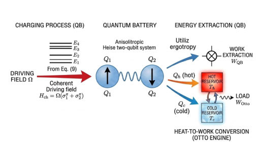
<figcaption class="paper-figure-caption"><b>Fig 1.</b> Fig. 1: Schematic representation of the quantum battery and Otto engine protocols implemented on the same interacting two-qubit system (Q1, Q2).</figcaption>
</figure>
<figure class="paper-figure-card">
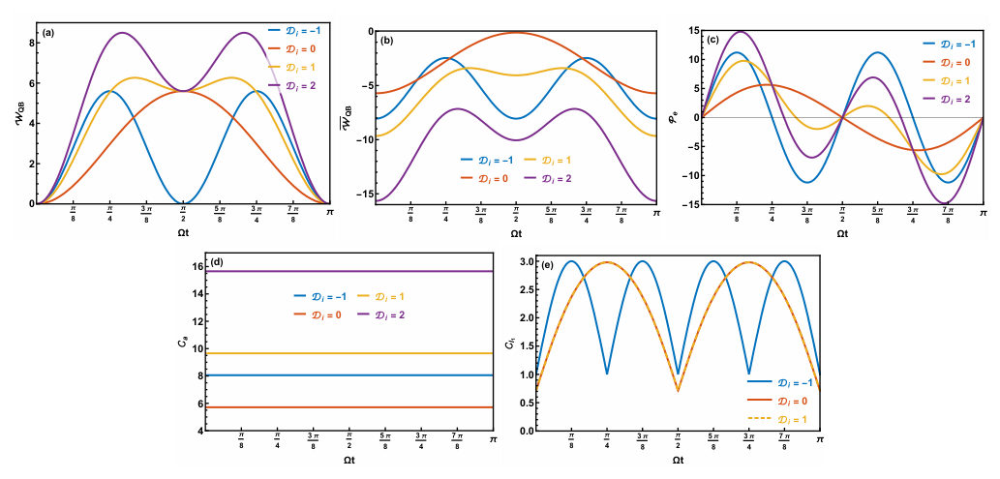
<figcaption class="paper-figure-caption"><b>Fig 2.</b> Fig. 2: Charging dynamics of the quantum battery as a function of the dimensionless time Ωt for different values of the dipolar interaction Di = −1, 0, 1, and 2. Panels (a)–(e) show the ergotropy WQB, anti-ergotropy WQB, instantaneous charging power Pe, storage capacity Ca, and ℓ1-norm of coherence Cℓ1, respectively. The remaining parameters are fixed at Jx = −0.3, Jy = −0.7, Jz = −0.9, Bz = 1, T = 0.2, and Γz = 1.</figcaption>
</figure>
<figure class="paper-figure-card">
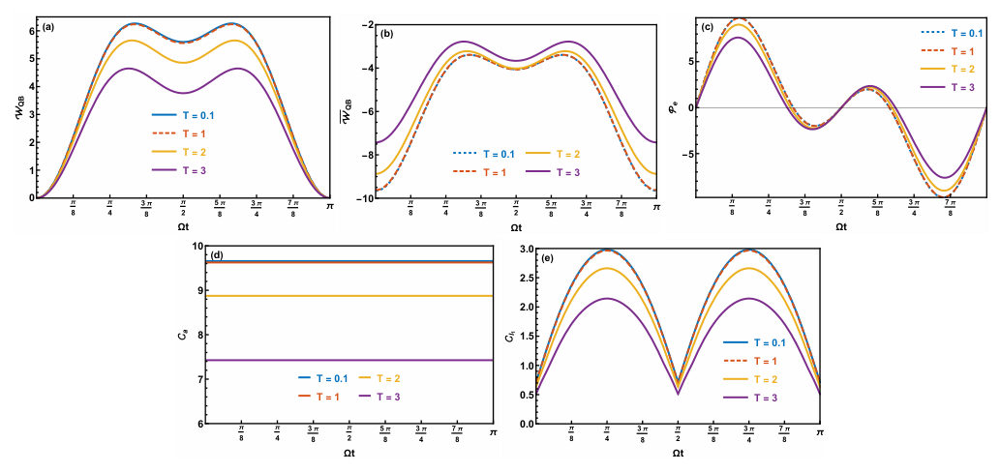
<figcaption class="paper-figure-caption"><b>Fig 3.</b> Fig. 3: Charging dynamics of the quantum battery as a function of the dimensionless time Ωt for different temperatures T = 0.1, 1, 2, and 3. Panels (a)–(e) show the ergotropy WQB, anti-ergotropy WQB, instantaneous charging power Pe, storage capacity Ca, and ℓ1-norm of coherence Cℓ1, respectively. The remaining parameters are fixed at Jx = −0.3, Jy = −0.7, Jz = −0.9, Di = 1, Bz = 1, and Γz = 1.</figcaption>
</figure>
<figure class="paper-figure-card">
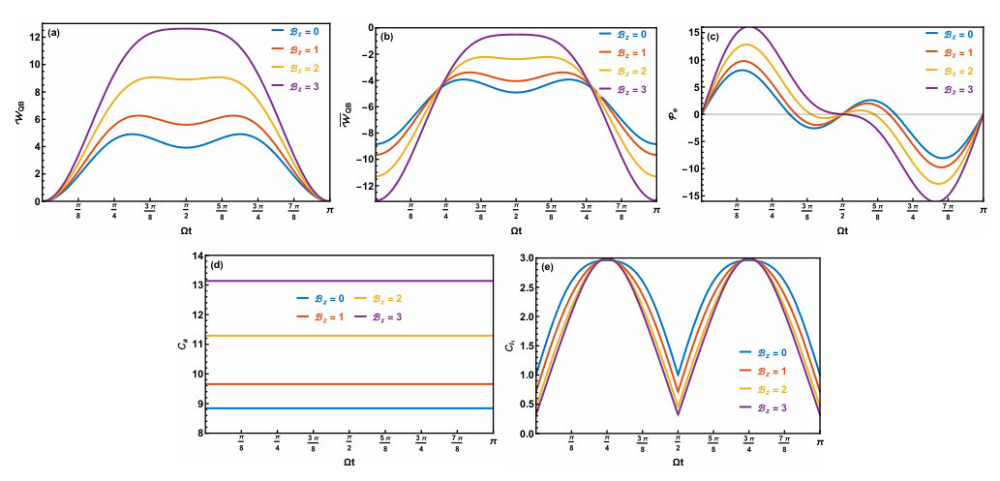
<figcaption class="paper-figure-caption"><b>Fig 4.</b> Fig. 4: Charging dynamics of the quantum battery as a function of the dimensionless time Ωt for different values of the external magnetic field Bz = 0, 1, 2, and 3. Panels (a)–(e) show the ergotropy WQB, anti-ergotropy WQB, instantaneous charging power Pe, storage capacity Ca, and ℓ1-norm of coherence Cℓ1, respectively. The remaining parameters are fixed at Jx = −0.3, Jy = −0.7, Jz = −0.9, Di = 1, T = 0.2, and Γz = 1.</figcaption>
</figure>
<figure class="paper-figure-card">
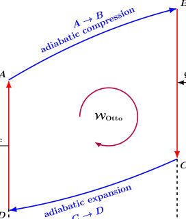
<figcaption class="paper-figure-caption"><b>Fig 5.</b> Fig. 5: Schematic representation of the quantum Otto cycle in the (Bz, U) plane.</figcaption>
</figure>
</div>

<p><strong>Summary.</strong> This paper investigates an interacting two-qubit spin system used as both a quantum battery and a quantum heat engine. By analyzing the effects of dipolar interactions, the authors show that enhancing energy storage capability does not guarantee enhanced work extraction efficiency. This highlights the complementary and distinct nature of quantum energy storage and heat-to-work conversion processes.</p>
<p><strong>Why it may be interesting.</strong> This work is highly relevant as it uses a microscopic model to differentiate between two distinct forms of energy conversion (storage vs. work), providing insights into how local interactions control different thermodynamic pathways in quantum systems.</p>
<details>
<summary>Detailed structure</summary>
<p><strong>Main problem.</strong> The study compares the energetic performance of a quantum battery (energy storage) versus a quantum Otto heat engine (heat-to-work conversion) in a single interacting spin system.</p>
<p><strong>Main result.</strong> The research demonstrates a pronounced contrast: increasing a specific microscopic interaction (dipolar coupling) enhances the battery's energy storage capacity but decreases the maximum work extractable from the heat engine.</p>
<p><strong>Method.</strong> The authors analyze the system using theoretical quantum mechanics, calculating key thermodynamic and quantum coherence measures for both protocols.</p>
<p><strong>Model / system.</strong> The system is an interacting two-qubit spin system governed by an anisotropic Heisenberg Hamiltonian, supplemented by dipolar, spin-orbit, and external magnetic field interactions.</p>
<p><strong>Key observables.</strong> Ergotropy, anti-ergotropy, storage capacity, net work, and thermodynamic efficiency.</p>
<p><strong>Important parameters / regimes.</strong> Dipolar interaction strength, temperature bias, and external magnetic field strength.</p>
<p><strong>Assumptions / limitations.</strong> The analysis assumes the system can be modeled by the specified Hamiltonian and compares results derived from two distinct thermodynamic protocols.</p>
<p><strong>Figures summary.</strong> Figures schematically represent the battery and Otto engine protocols on the two-qubit system, and tables/figures summarize the quantitative dependence of key observables on the dipolar interaction.</p>
<p><strong>Paper structure.</strong> The paper introduces the model, analyzes the quantum battery protocol, investigates the quantum Otto cycle, directly compares the performance metrics, and concludes by contrasting the findings.</p>
</details>
<details>
<summary>Abstract</summary>
<p>We investigate the energetic and thermodynamic performance of an interacting two-qubit system serving as both a quantum battery and a quantum Otto heat engine. The working medium is described by an anisotropic Heisenberg Hamiltonian supplemented by a dipolar interaction, a symmetric spin--orbit interaction, and an external magnetic field. Within a unified microscopic framework, we first analyze a coherent unitary charging protocol and characterize the resulting energy-storage performance through the ergotropy, anti-ergotropy, charging power, storage capacity, and $\ell_1$-norm of quantum coherence. We investigate the effects of the dipolar interaction, temperature, and magnetic field on these quantities. We then employ the same working medium in a quantum Otto cycle and study the absorbed and released heat, net work, and thermodynamic efficiency as functions of the magnetic-field modulation, dipolar interaction, and temperature bias. A direct comparison between the two protocols reveals a pronounced contrast in their response to the dipolar interaction. In the investigated parameter regime, increasing the dipolar interaction substantially enhances the maximum ergotropy and storage capacity of the quantum battery, whereas the maximum work extracted per Otto cycle decreases. The Otto efficiency exhibits a nonmonotonic dependence on the dipolar interaction while remaining below the Carnot bound. These results demonstrate that an enhancement of quantum energy-storage capability does not necessarily imply an enhancement of heat-to-work conversion. Our findings highlight the complementary nature of quantum batteries and quantum heat engines and show how microscopic spin interactions can   be used to control different forms of quantum energy conversion within   the same physical platform.</p>
</details>
<p><sub><a href="#top">↑ back to top</a></sub></p>

<p><a id="paper-2608.19519"></a></p>
<h3 id="beyond-integrability-preserving-renormalization-group-protocol-in-non-hermitian-hamiltonians-with-time-dependent-interaction-strengths"><a href="http://arxiv.org/abs/2608.19519v1">Beyond Integrability Preserving Renormalization-Group Protocol in Non-Hermitian Hamiltonians with Time-Dependent Interaction Strengths</a></h3>
<p><strong>Authors:</strong> Parameshwar R. Pasnoori<br>
<strong>Type:</strong> theory · <strong>Category:</strong> strongly correlated electrons · <strong>PDF:</strong> <a href="https://arxiv.org/pdf/2608.19519v1">https://arxiv.org/pdf/2608.19519v1</a><br>
<strong>Analysis basis:</strong> full PDF text, analyzed in chunks
<strong>Topic relevance:</strong> <code>Keldysh / 2PI / non-Gaussian methods</code> <strong>1/5</strong> · <code>analog quantum simulation</code> <strong>1/5</strong> · <code>correlated / nonlocal dissipation</code> <strong>1/5</strong> · <code>driven-dissipative phase transition</code> <strong>1/5</strong> · <code>methods for driven-dissipative</code> <strong>1/5</strong> · <code>non-equilibrium universality</code> <strong>1/5</strong></p>
<div class="figure-strip-hint">↔ Scroll figures horizontally</div>
<div class="paper-figures-scroll">
<figure class="paper-figure-card">
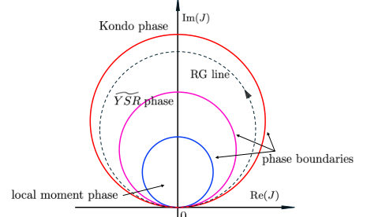
<figcaption class="paper-figure-caption"><b>Fig 1.</b> FIG. 1: Figure depicts the three phases exhibited by the static non-Hermitian Kondo model: the Kondo phase, the ] Y SR phase and the local moment phase. The x and y-axes corre- spond to the real and the imaginary values of the interaction strength respectively. The trajectories of the RG flow are perfect circles resting at the origin as shown (dashed circles) with the arrow representing the flow in the UV. All the RG trajectory circles are centered on the imaginary axis where the radius of the circle corresponds to the respective RG in- variant. The phase boundaries occur at specific values of the RG invariant values and are represented by solid circles.</figcaption>
</figure>
<figure class="paper-figure-card">
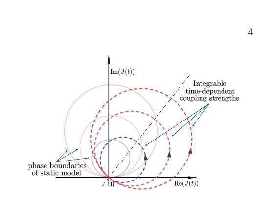
<figcaption class="paper-figure-caption"><b>Fig 2.</b> FIG. 2: Figure depicts the integrability preserving time- dependent strengths. The x and y-axes correspond to the real and the imaginary values of the time-dependent cou- pling strength respectively. The trajectories of the coupling strengths are perfect circles resting at the origin as shown (dashed circles) with the arrows representing the flow in the direction of increasing time. The points on a given circle that are on the right and left side of the origin are the past and future infinities respectively. All circles are centered on the slanted dashed line and the radius of each circle correspond- ing to an integrable time-dependent coupling strength is a dynamical invariant. When the...</figcaption>
</figure>
</div>

<p><strong>Summary.</strong> This theoretical work investigates how integrability constrains time-dependent quantum systems, specifically extending the analysis to non-Hermitian Hamiltonians. By using the generalized Bethe ansatz, the authors prove that the constraints are more general than the standard Renormalization Group (RG) protocol. This reveals new, non-RG-predicted dynamical pathways for the system's coupling strengths.</p>
<p><strong>Why it may be interesting.</strong> This work provides a powerful generalization of integrability concepts from Hermitian to non-Hermitian systems, which is highly relevant for open quantum systems and non-equilibrium dynamics where non-Hermiticity is common.</p>
<details>
<summary>Detailed structure</summary>
<p><strong>Main problem.</strong> The paper extends the study of integrability-preserving time-dependent quantum models to non-Hermitian Hamiltonians, comparing the constraints imposed by integrability against the standard Renormalization Group (RG) protocol.</p>
<p><strong>Main result.</strong> The set of integrability-preserving time-dependent strengths is shown to be larger than those predicted by the RG protocol, allowing for time evolutions that trace perfect limit cycles in the coupling parameter space.</p>
<p><strong>Method.</strong> The analysis utilizes the generalized Bethe ansatz framework to derive consistency conditions (Yang-Baxter equations) for the time-dependent Schrödinger equation.</p>
<p><strong>Model / system.</strong> The primary model is the time-dependent non-Hermitian Kondo model, characterized by a time-dependent complex interaction strength J(t). The static counterpart involves analyzing RG flow in the Kondo model, which exhibits distinct phases (Kondo, YSR, local moment).</p>
<p><strong>Key observables.</strong> The time evolution of the inverse interaction strength, 1/J(t), and the parameters defining the phase space trajectories (limit cycles).</p>
<p><strong>Important parameters / regimes.</strong> The time-dependent coupling strength J(t), the RG invariant parameter $f_i$, and the rate of time dependence in $1/J(t)$.</p>
<p><strong>Assumptions / limitations.</strong> The analysis relies on the consistency conditions derived from the generalized Bethe ansatz structure, and the comparison is made by allowing complex time-dependent coupling strengths.</p>
<p><strong>Figures summary.</strong> Figure 1 illustrates the three phases of the static model with RG flow trajectories. Figure 2 shows the phase space plot of Im(J) vs Re(J), contrasting the standard RG flow with the newly found limit cycles for the non-Hermitian case.</p>
<p><strong>Paper structure.</strong> The paper first establishes the background of the RG protocol in integrable systems. It then applies the generalized Bethe ansatz to the non-Hermitian time-dependent model, deriving constraints that lead to linear time dependence for 1/J(t). Finally, it compares these constraints to the RG flow, demonstrating the larger set of integrable paths.</p>
</details>
<details>
<summary>Abstract</summary>
<p>It is well established that in time-dependent quantum systems, integrability preserving time-dependent interaction strengths are identical to the renormalization group (RG) trajectories of the corresponding static model when time <code>$t$' in the driven model is identified with the logarithm of the cutoff</code>$\logΛ$' of the static model. We refer to this integrability preserving driving as the RG protocol. In this work we extend the class of time-dependent integrable models to include non-Hermitian quantum models with time-dependent interaction strengths. Using the recently formulated generalized Bethe ansatz framework [P. R. Pasnoori, Phys. Rev. B 112, L060409 (2025)], we show that the constraints imposed by integrability are more general: The interaction strengths of the static model that flow in the RG follow the respective RG trajectories in the corresponding time-dependent model as described above. In addition, the interaction strengths of the static model that are RG invariant can either be constant or have a specific time-dependence in the corresponding time-dependent model which is constrained by integrability. Thus we establish that in the context of time-dependent non-Hermitian systems, the set of integrability preserving time-dependent strengths is larger than the set corresponding to the RG protocol.</p>
</details>
<p><sub><a href="#top">↑ back to top</a></sub></p>

<p><a id="paper-2608.20178"></a></p>
<h3 id="characterization-of-a-damping-channel-as-a-mixture-of-amplitude-damping-and-anti-damping-channels-of-different-parameters"><a href="http://arxiv.org/abs/2608.20178v1">Characterization of a damping channel as a mixture of amplitude damping and anti-damping channels of different parameters</a></h3>
<p><strong>Authors:</strong> Vijay Pathak, R. Srikanth<br>
<strong>Type:</strong> theory · <strong>Category:</strong> quantum information and computing · <strong>PDF:</strong> <a href="https://arxiv.org/pdf/2608.20178v1">https://arxiv.org/pdf/2608.20178v1</a><br>
<strong>Analysis basis:</strong> full PDF text, analyzed in chunks
<strong>Topic relevance:</strong> <code>correlated / nonlocal dissipation</code> <strong>1/5</strong> · <code>driven-dissipative phase transition</code> <strong>1/5</strong> · <code>methods for driven-dissipative</code> <strong>1/5</strong> · <code>non-equilibrium universality</code> <strong>1/5</strong> · <code>quantum measurements</code> <strong>1/5</strong></p>
<div class="figure-strip-hint">↔ Scroll figures horizontally</div>
<div class="paper-figures-scroll">
<figure class="paper-figure-card">
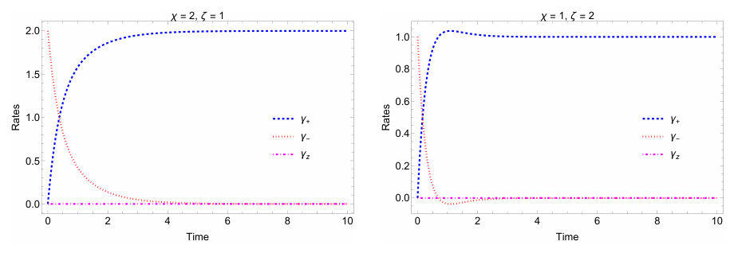
<figcaption class="paper-figure-caption"><b>Fig 1.</b> FIG. 1: The canonical rates γ+(t), γ−(t), and γz(t) are plotted for an exponentially decaying channel parameter η(t) = exp[−χt] and an exponentially decaying mixing probability p(t) = exp[−ζt]. Left: χ = 2 and ζ = 1, for which the resulting dynamics is CP-divisible. Right: χ = 1 and ζ = 2, for which the resulting dynamics is non-CP-divisible.</figcaption>
</figure>
<figure class="paper-figure-card">
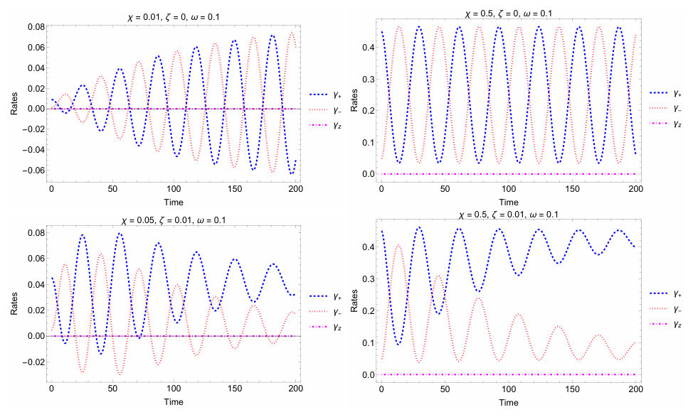
<figcaption class="paper-figure-caption"><b>Fig 2.</b> FIG. 2: The canonical rates γ+(t), γ−(t), and γz(t) are plotted for the monotonically decaying channel parameter η(t) = exp[−χt] and the mixing probability p(t) = p0 + p exp[−ζt] sin2(ωt). For all panels, p0 = 0.1 and p = 0.8. Top left: non-P-divisible dynamics for a purely oscillatory mixing probability (ζ = 0) with χ close to ζ. Top right: CP-divisible dynamics for ζ = 0 with χ &gt; ζ. Bottom left: non-P-divisible dynamics for an oscillator decaying mixing probability with ζ = 0.01. Bottom right: CP-divisible dynamics for the same decaying mixing probability with a sufficiently large χ. The oscillatory behavior of the rates originates from the time dependence of the mixing probability, while...</figcaption>
</figure>
<figure class="paper-figure-card">
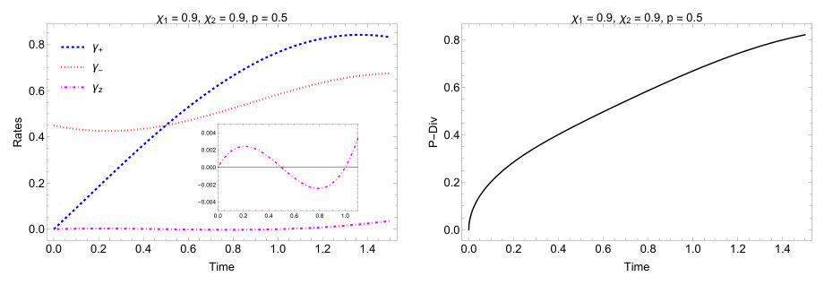
<figcaption class="paper-figure-caption"><b>Fig 3.</b> FIG. 3: Left: The canonical rates γ+(t), γ−(t), and γz(t) are plotted for η1(t) = exp[−χ1t] and η2(t) = exp[−χ2t2] with constant mixing probability p. The inset shows the region where γz(t) &lt; 0. Right: The P-divisibility condition 2γz(t) + p</figcaption>
</figure>
<figure class="paper-figure-card">
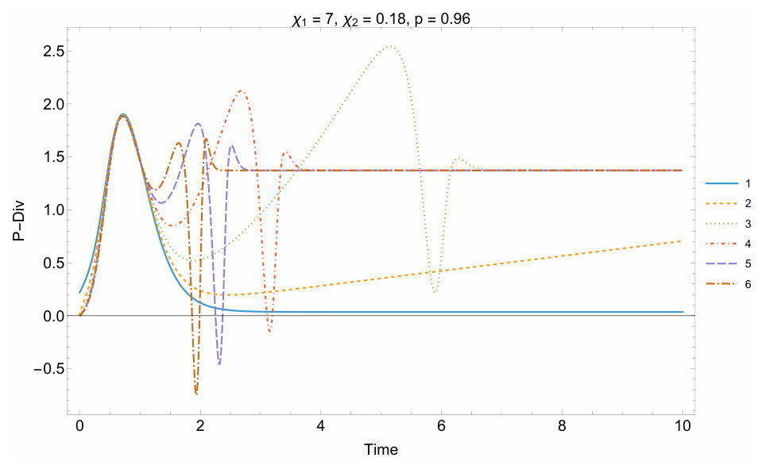
<figcaption class="paper-figure-caption"><b>Fig 4.</b> FIG. 4: The P-divisibility condition is plotted as a function of time for η1(t) = exp[−χ1t] and η2(t) = exp[−χ2ti] with constant mixing probability p. The different curves correspond to different values of the exponent i. The condition remains positive throughout the evolution for i ≤3, indicating P-divisible dynamics, whereas for i &gt; 3 it becomes negative over part of the evolution, indicating non-P-divisible dynamics.</figcaption>
</figure>
<figure class="paper-figure-card">
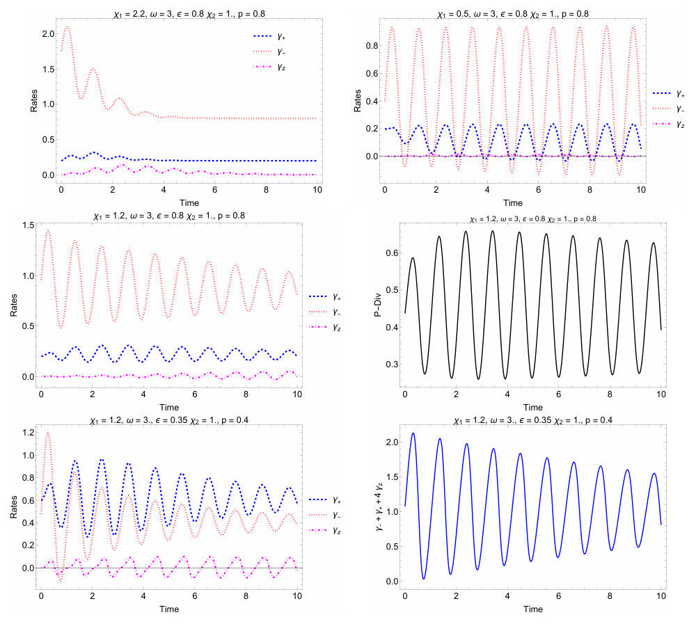
<figcaption class="paper-figure-caption"><b>Fig 5.</b> FIG. 5: Representative dynamical classes for the mixing of one CP-divisible and one non-P-divisible constituent channel with constant mixing probability p. The non-P-divisible channel has the oscillatory parameter η1(t) = (ϵ + (1 −ϵ) cos2(ωt)) exp[−χ1t], while the CP-divisible channel has the monotonically decaying parameter η2(t) = exp[−χ2t]. Top left: all three canonical rates remain positive, corresponding to CP-divisible dynamics. Top right: γ+(t) and γ−(t) become negative simultaneously, giving non-P-divisible and BLP non-Markovian dynamics. Middle left: γz(t) becomes negative, indicating non-CP-divisible dynamics. Middle right: the P-divisibility condition 2γz(t)+ p</figcaption>
</figure>
</div>

<p><strong>Summary.</strong> This paper presents a novel method to engineer open quantum system dynamics by mixing amplitude-damping and anti-damping channels. This framework grants independent control over different aspects of decoherence, allowing researchers to tune dynamics between unital and non-unital regimes. The results offer a flexible tool for quantum information processing, enabling precise control over noise mitigation and channel characterization.</p>
<p><strong>Why it may be interesting.</strong> This work provides a powerful, flexible tool for quantum information scientists to engineer noise channels, moving beyond simple thermal models to precisely control decoherence effects for error correction or state preparation.</p>
<details>
<summary>Detailed structure</summary>
<p><strong>Main problem.</strong> The paper aims to develop a constructive framework to generate a broad class of phase-covariant quantum dynamics that goes beyond standard models like Generalized Amplitude Damping (GAD). This allows for independent control over different aspects of open system evolution.</p>
<p><strong>Main result.</strong> The proposed mixing of amplitude-damping and anti-damping channels allows for independent control over contraction and translation of the Bloch sphere, enabling the engineering of dynamics with specific divisibility properties (P-divisible, CP-divisible).</p>
<p><strong>Method.</strong> The authors employ the general theorem for P-divisibility and CP-divisibility, applying it constructively by mixing two known channels (AD and anti-AD) with time-dependent probabilities and parameters.</p>
<p><strong>Model / system.</strong> The system is modeled as a qubit undergoing open evolution, governed by a general master equation in the phase-covariant class. The dynamics are characterized by time-dependent rates ($\gamma_{\pm}(t), \gamma_z(t)$).</p>
<p><strong>Key observables.</strong> P-divisibility, CP-divisibility, the trace norm distance $D(t)$ from the identity channel, and the evolution of Bloch sphere coordinates.</p>
<p><strong>Important parameters / regimes.</strong> Unequal decay parameters ($\eta_1(t), \eta_2(t)$) for the two channels, and the time-dependent mixing probability $p(t)$.</p>
<p><strong>Assumptions / limitations.</strong> The analysis assumes the dynamics are completely positive (CP) from $t=0$, and the primary utility relies on the controllable anti-AD channel exhibiting complete recurrence.</p>
<p><strong>Figures summary.</strong> Figures illustrate the time evolution of the error metric $D(t)$ and the translation term, comparing results for various combinations of AD/anti-AD parameters and mixing probabilities.</p>
<p><strong>Paper structure.</strong> The paper establishes the physical problem, introduces the mixing framework, derives necessary and sufficient conditions for P-divisibility using specialized bases, and finally demonstrates the control over error mitigation and dynamical regimes.</p>
</details>
<details>
<summary>Abstract</summary>
<p>Non-unital noise is a fundamental feature of open quantum systems, governing energy exchange and inducing state translations on the Bloch sphere. While such translations can be useful for tasks such as state preparation and channel capacity, unital dynamics where no translation occurs are often preferred in quantum information processing, particularly for error correction. Phase-covariant dynamics provide a general framework encompassing dissipation, excitation, and dephasing processes in qubit systems; however, commonly used models such as the generalized amplitude damping (GAD) channel offer only limited control over these features. In this work, we present a constructive framework for generating a broader class of phase-covariant dynamics by mixing amplitude-damping and anti-damping channels with unequal decay parameters and time-dependent mixing probabilities. This approach enables independent control over contraction and translation, allows continuous tuning between non-unital and unital regimes, and yields an effective dephasing contribution absent in GAD. To characterize these dynamics, we employ the general theorem for P-divisibility and show that it can be used constructively by evaluating it in suitably chosen Hilbert space bases, leading to simplified conditions for both unital and non-unital cases. The framework captures a wide range of behaviors, including CP-divisible, P-divisible but not CP-divisible, and non-P-divisible dynamics. We further show that appropriate mixing can reduce the deviation from the ideal noiseless evolution and that such improvement persists even after tuning the dynamics to the unital regime. Our results provide a flexible approach to engineering open system dynamics beyond standard thermal models, with potential applications in noise control and quantum information processing.</p>
</details>
<p><sub><a href="#top">↑ back to top</a></sub></p>

<p><a id="paper-2608.19352"></a></p>
<h3 id="hysteresis-without-coexistence-disorder-rounded-first-order-transitions-in-a-van-der-waals-magnet"><a href="http://arxiv.org/abs/2608.19352v1">Hysteresis without coexistence: disorder-rounded first-order transitions in a van der Waals magnet</a></h3>
<p><strong>Authors:</strong> Xiaoyu Guo, Abby N. Neill, Christopher M. Pasco, Tyrel M. McQueen, N. P. Armitage<br>
<strong>Type:</strong> experiment · <strong>Category:</strong> statistical mechanics · <strong>PDF:</strong> <a href="https://arxiv.org/pdf/2608.19352v1">https://arxiv.org/pdf/2608.19352v1</a><br>
<strong>Analysis basis:</strong> full PDF text, analyzed in chunks
<strong>Topic relevance:</strong> <code>Frenkel-Kontorova</code> <strong>1/5</strong> · <code>analog quantum simulation</code> <strong>1/5</strong> · <code>driven-dissipative phase transition</code> <strong>1/5</strong> · <code>non-equilibrium universality</code> <strong>1/5</strong></p>
<div class="figure-strip-hint">↔ Scroll figures horizontally</div>
<div class="paper-figures-scroll">
<figure class="paper-figure-card">
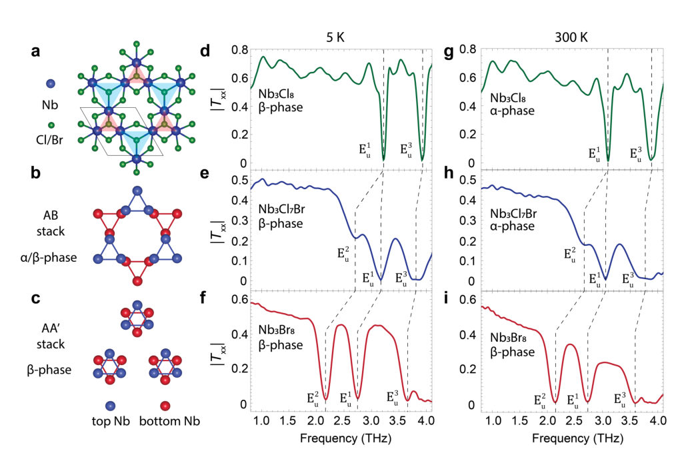
<figcaption class="paper-figure-caption"><b>Fig 1.</b> FIG. 1: Atomic structure of Nb3X8 and evolutions of IR-active phonons with different halogen compositions. (a) Atomic structure of monolayer Nb3X8. The breathing kagome lattice is shaded in blue and red and the unit cell is indicated by the parallelogram. (b-c) The AB (b) and AA′ (c) stacking of the Nb atoms in adjacent vdW layers. α-phase Nb3X8 only has AB stacking while β-phase has alternating AB and AA′ stackings. (d-i) The amplitude of transmission coefficient Txx from Nb3Cl8, Nb3Cl7Br and Nb3Br8 at 5 K (d-f) and at 300 K (g-i). The corresponding phonon modes are labeled.</figcaption>
</figure>
<figure class="paper-figure-card">
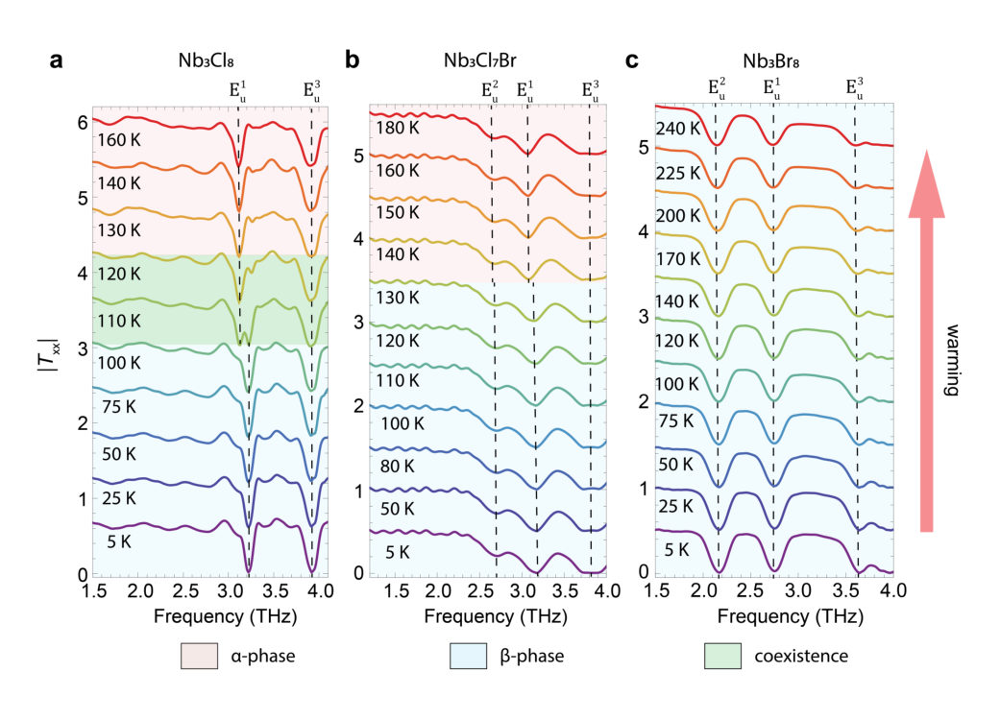
<figcaption class="paper-figure-caption"><b>Fig 2.</b> FIG. 2: T-dependent transmission spectra capture phase transitions and phase inhomogeneity. (a-c) The magni- tude of the transmission coefficient Txx as a function of temperature in Nb3Cl8 (a), Nb3Cl7Br (b) and Nb3Br8 (c). Measurements were taken during warming. The temperature ranges corresponding to the α- and β-phases, and their coexistence are shaded in red, blue and green, respectively.</figcaption>
</figure>
<figure class="paper-figure-card">
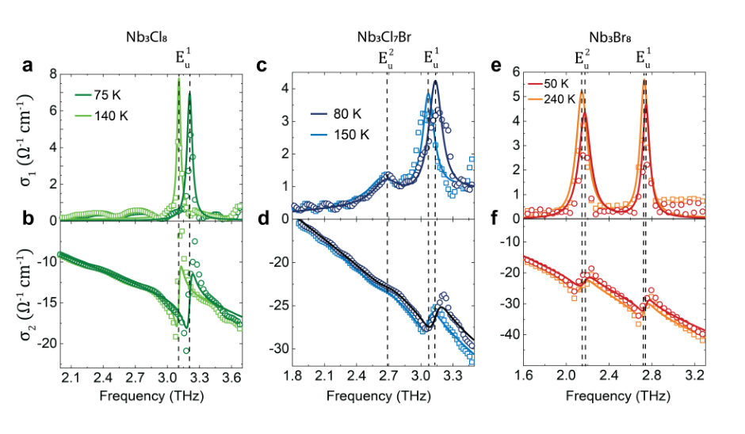
<figcaption class="paper-figure-caption"><b>Fig 3.</b> FIG. 3: Optical conductivity fitted with a Lorentz-oscillator model. (a-f) Real part (σ1) and imaginary part (σ2) of optical conductivity at selected temperatures in Nb3Cl8 (a-b), Nb3Cl7Br (c-d) and Nb3Br8 (e-f). Solid lines are the best simultaneous fit to σ1 and σ2 using a Lorentz-oscillator model. Clear phonon frequency shifts can be observed across phase transitions in Nb3Cl8 and Nb3Cl7Br.</figcaption>
</figure>
<figure class="paper-figure-card">
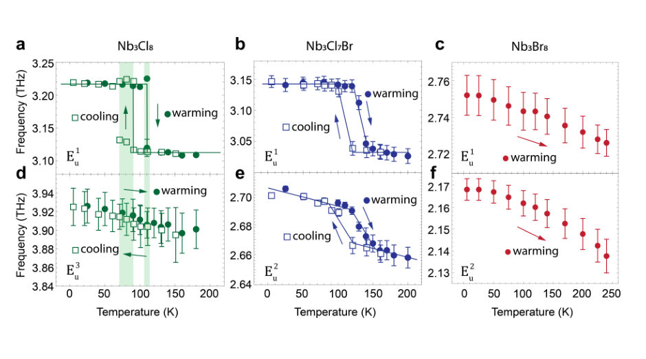
<figcaption class="paper-figure-caption"><b>Fig 4.</b> FIG. 4: Hysteresis in T-dependent phonon frequency reflects first-order phase transitions. (a-c) Frequencies of E1 u phonon as a function of temperature in Nb3Cl8 (a), Nb3Cl7Br (b) and Nb3Br8 (c). (d) Frequencies of E3 u phonon as a function of temperature in Nb3Cl8. (e-f) Frequencies of E2 u phonon as a function of temperature in Nb3Cl7Br (e) and Nb3Br8 (f). Solid circles denote warming data, and open squares denote cooling data. Temperatures with coexistence of α- and β-phases in Nb3Cl8 are shaded in green. Error bars represent fitting uncertainties. Solid lines are guide to the eyes. Note the very different frequency scales in the individual panels.</figcaption>
</figure>
<figure class="paper-figure-card">
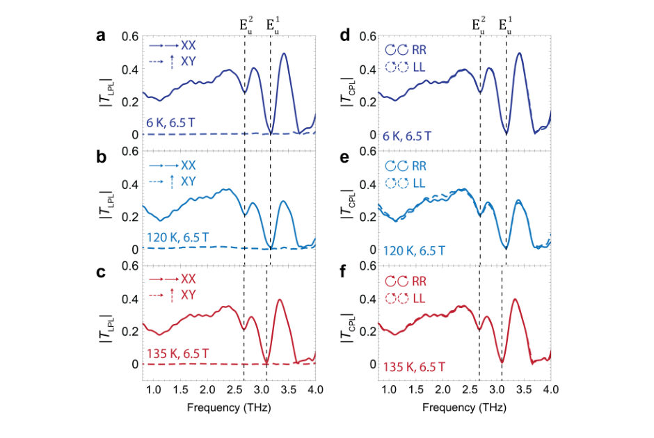
<figcaption class="paper-figure-caption"><b>Fig 5.</b> FIG. 5: Transmission coefficients in linear and circular basis characterize structural and magnetic ground states. (a-f) The magnitudes of the transmission coefficients in linear basis TLP L (Txx and Txy) (a-c), and circular basis TCP L (TRR and TLL) (d-f) of Nb3Cl7Br as a function of frequency at 6 K, far below the magnetic transition temperature (a and b), 120 K, right below the magnetic transition temperature (b and e) and 135 K, right above the magnetic transition temperature (c and f). The almost-zero |Txy| is consistent with ¯3m point group symmetry and the almost-identical spectra of |TRR| and TLL confirms a non-magnetic ground state.</figcaption>
</figure>
</div>

<p><strong>Summary.</strong> This experimental study uses terahertz spectroscopy on van der Waals magnets to examine how halogen disorder affects first-order phase transitions. The results show that disorder destroys the clear evidence of phase coexistence but leaves behind thermal hysteresis. This strongly suggests that disorder fragments the transition into local domains, allowing researchers to separate the effects of hysteresis from those of bulk coexistence.</p>
<p><strong>Why it may be interesting.</strong> The work provides a clean experimental platform to test fundamental theoretical predictions regarding the stability of ordered phases under quenched disorder, which has analogues in many condensed matter systems.</p>
<details>
<summary>Detailed structure</summary>
<p><strong>Main problem.</strong> The study investigates how quenched disorder modifies the nature of first-order phase transitions, specifically distinguishing between the signatures of thermal hysteresis and macroscopic phase coexistence.</p>
<p><strong>Main result.</strong> Disorder-induced substitution ($   ext{Cl}     o   ext{Br}$) suppresses macroscopic phase coexistence, causing the transition to broaden and fragment into locally favored domains, while thermal hysteresis persists.</p>
<p><strong>Method.</strong> Time-domain terahertz spectroscopy (TDTS) was employed to measure temperature-dependent phonon frequencies and scattering rates across the phase transition.</p>
<p><strong>Model / system.</strong> The physical system is the quasi-two-dimensional trimerized kagome van der Waals magnet family $    ext{Nb}<em 8-x>3   ext{Cl}</em>_x$. The transition involves structural changes and magnetic ordering.}   ext{Br</p>
<p><strong>Key observables.</strong> Phonon frequencies ($  ext{E}<em 3u>{1u},    ext{E}</em>$), phonon linewidths, thermal hysteresis, and evidence of macroscopic phase coexistence.},    ext{E}_{2u</p>
<p><strong>Important parameters / regimes.</strong> The degree of disorder, controlled by the Br substitution concentration ($x$), and temperature ($T$).</p>
<p><strong>Assumptions / limitations.</strong> The analysis assumes that the persistence of thermal hysteresis in the disordered compound, despite the loss of coexistence, implies that these two hallmarks of first-order transitions arise from distinct physical mechanisms.</p>
<p><strong>Figures summary.</strong> Figures show temperature-dependent transmission spectra ($ ext{T}_{xx}$) for $ ext{Nb}_3   ext{Cl}_8$ (showing coexistence) versus $   ext{Nb}_3   ext{Cl}_7   ext{Br}$ (showing broadening), and phonon scattering rates derived from fitting these spectra.</p>
<p><strong>Paper structure.</strong> The paper systematically compares the clean compound ($    ext{Nb}_3   ext{Cl}_8$) exhibiting clear first-order signatures (coexistence + hysteresis) with the disordered compound ($    ext{Nb}_3   ext{Cl}_7   ext{Br}$), using theoretical frameworks (Imry-Wortis, Aizenman-Wehr) to interpret the observed suppression of coexistence.</p>
</details>
<details>
<summary>Abstract</summary>
<p>Quenched disorder can profoundly modify phase transitions. In low-dimensional systems, theory predicts that even weak quenched disorder can round the thermodynamic discontinuities associated with a first-order phase transition. Here, we employ time-domain terahertz spectroscopy to investigate the quasi-two-dimensional trimerized kagome van der Waals magnet family Nb$_3$Cl$_{8-x}$Br$_x$ ($x=0$, 1 and 8). We observe the emergence of an additional phonon branch upon Br substitution, whose spectral weight increases and frequency softens with increasing Br concentration. The temperature evolution of the phonon frequencies reveals a clean first-order transition in Nb$_3$Cl$_8$ characterized by macroscopic phase coexistence and thermal hysteresis. In contrast, the transition in the substitutionally disordered compound Nb$_3$Cl$_7$Br retains its hysteresis while exhibiting a substantially broadened transition with no resolvable macroscopic phase coexistence. These observations reveal disorder-induced fragmentation of the transition into locally favored domains instead of well-defined bulk phases separated by stable phase boundaries. The behavior is consistent with the Imry-Wortis and the Aizenman-Wehr scenarios for the effect of quenched disorder in low-dimensional systems, which destabilizes macroscopic phase coexistence and rounds the thermodynamic discontinuities associated with first-order transitions. Thermal hysteresis persists in the disordered compound despite the lack of resolvable coexistence, indicating that the two features often treated as a single hallmark of first-order character arise distinctly and can be separated by disorder. Moreover, our results establish Nb$_3$Cl$_{8-x}$Br$_x$ as a promising platform for investigating the effects of disorder on first-order transitions in low-dimensional systems.</p>
</details>
<p><sub><a href="#top">↑ back to top</a></sub></p>

<p><a id="paper-2608.19685"></a></p>
<h3 id="tight-entropy-contraction-of-generalized-quantum-depolarization"><a href="http://arxiv.org/abs/2608.19685v1">Tight Entropy Contraction of Generalized Quantum Depolarization</a></h3>
<p><strong>Authors:</strong> Li Gao, Long Zhao<br>
<strong>Type:</strong> theory · <strong>Category:</strong> quantum information and computing · <strong>PDF:</strong> <a href="https://arxiv.org/pdf/2608.19685v1">https://arxiv.org/pdf/2608.19685v1</a><br>
<strong>Analysis basis:</strong> full PDF text, analyzed in chunks
<strong>Topic relevance:</strong> <code>correlated / nonlocal dissipation</code> <strong>1/5</strong> · <code>driven-dissipative phase transition</code> <strong>1/5</strong> · <code>methods for driven-dissipative</code> <strong>1/5</strong> · <code>non-equilibrium universality</code> <strong>1/5</strong></p>
<div class="figure-strip-hint">↔ Scroll figures horizontally</div>
<div class="paper-figures-scroll">
<figure class="paper-figure-card">
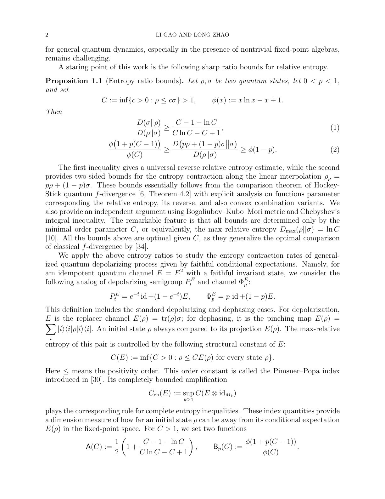
<figcaption class="paper-figure-caption"><b>Fig 1.</b> Low-resolution page preview, page 2</figcaption>
</figure>
<figure class="paper-figure-card">
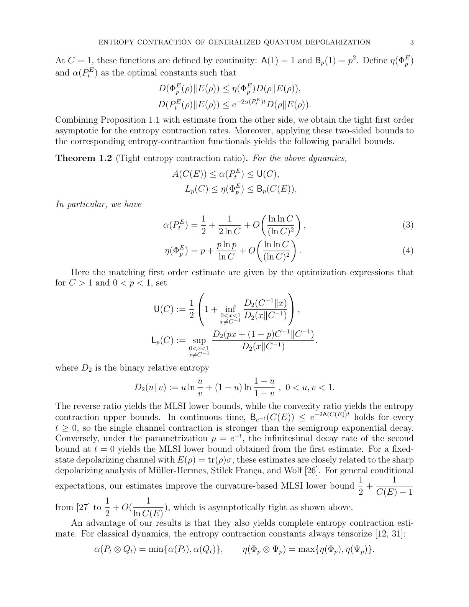
<figcaption class="paper-figure-caption"><b>Fig 2.</b> Low-resolution page preview, page 3</figcaption>
</figure>
<figure class="paper-figure-card">
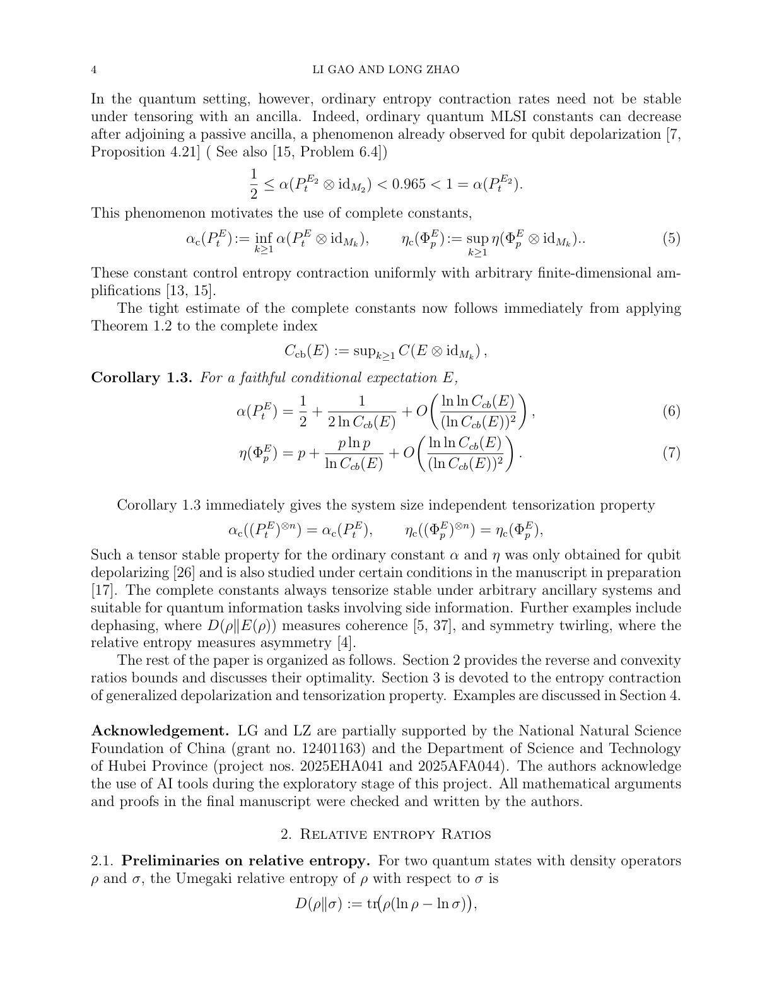
<figcaption class="paper-figure-caption"><b>Fig 3.</b> Low-resolution page preview, page 4</figcaption>
</figure>
<figure class="paper-figure-card">
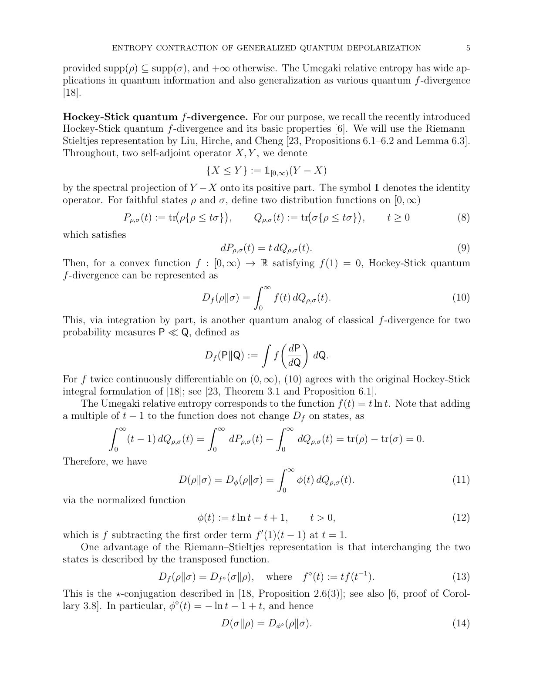
<figcaption class="paper-figure-caption"><b>Fig 4.</b> Low-resolution page preview, page 5</figcaption>
</figure>
<figure class="paper-figure-card">
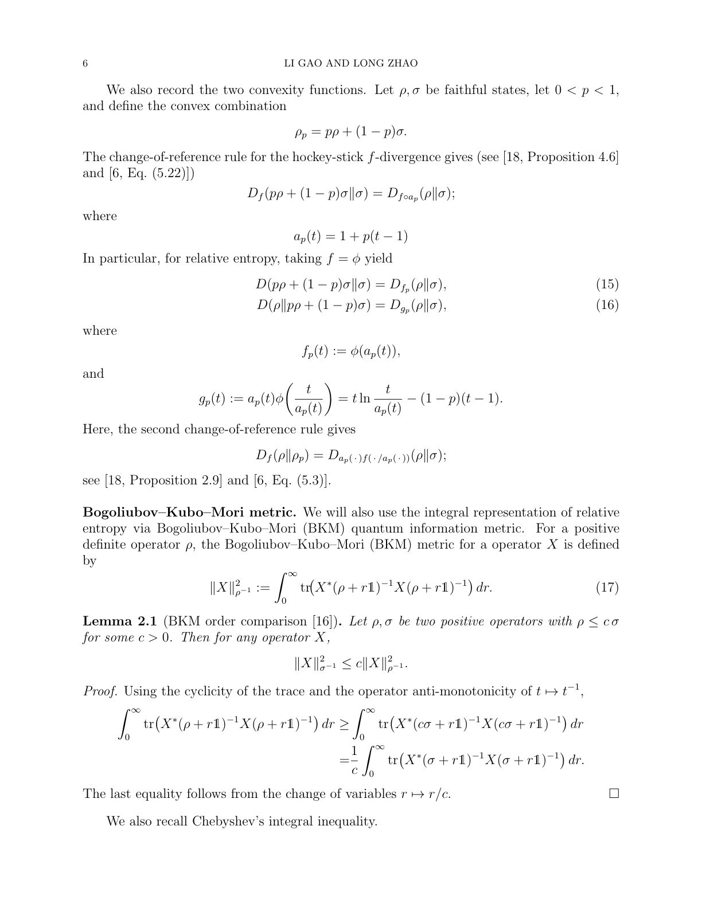
<figcaption class="paper-figure-caption"><b>Fig 5.</b> Low-resolution page preview, page 6</figcaption>
</figure>
</div>

<p><strong>Summary.</strong> This theoretical paper develops sharp bounds for the rate at which quantum information decays under generalized noise processes. By analyzing the relative entropy contraction using advanced tools like quantum f-divergences, the authors provide asymptotic formulas for these decay rates. The results are crucial for understanding the fundamental limits of quantum coherence preservation in noisy quantum systems.</p>
<p><strong>Why it may be interesting.</strong> This work provides rigorous, quantitative bounds on how quantum information (coherence, entanglement) decays under realistic noise models, which is fundamental for designing fault-tolerant quantum computation protocols.</p>
<details>
<summary>Detailed structure</summary>
<p><strong>Main problem.</strong> The paper establishes tight upper and lower bounds for the relative entropy contraction rate of generalized quantum depolarizing channels and semigroups.</p>
<p><strong>Main result.</strong> It derives asymptotic formulas for the contraction rates ($\alpha(P_E^t)$ and $\eta(\Phi_E^p)$) in terms of the structural constants $C(E)$ and $C_{cb}(E)$, and proves the tensor stability of these complete constants.</p>
<p><strong>Method.</strong> The analysis heavily relies on bounding ratios of relative entropies using tools like the Hockey-Stick quantum f-divergence and the Bogoliubov–Kubo–Mori quantum Fisher information metric.</p>
<p><strong>Model / system.</strong> The study analyzes quantum dynamics governed by generalized quantum depolarizing channels ($\Phi_E^p$) and semigroups ($P_E^t$), which are modeled using faithful conditional expectations ($E$). Examples include quantum depolarization and dephasing.</p>
<p><strong>Key observables.</strong> Relative entropy $D(
ho\|\sigma)$, complete contraction constants $C_{cb}(E)$, and the contraction rates $\alpha(P_E^t)$ and $\eta(\Phi_E^p)$.</p>
<p><strong>Important parameters / regimes.</strong> The structural constants $C(E)$ and $C_{cb}(E)$, which quantify the noise strength and are crucial for determining the asymptotic decay rates.</p>
<p><strong>Assumptions / limitations.</strong> The derivation of the lower bound relies on the existence of an index-achieving pure state, and the final results are presented as asymptotic estimates for large structural constants.</p>
<p><strong>Figures summary.</strong> Not specified in the notes, but the structure implies derivations leading to specific asymptotic equations (e.g., Eq. 50, 52) and structural identities (e.g., Eq. 64).</p>
<p><strong>Paper structure.</strong> The paper progresses by first establishing general bounds using relative entropy ratios (Chunk 2), then applying these tools to the specific dynamics of quantum depolarizing channels (Chunk 1), and finally deriving the asymptotic forms and proving the multiplicative properties of the complete index (Chunks 3 &amp; 4).</p>
</details>
<details>
<summary>Abstract</summary>
<p>We establish upper and lower bounds for relative entropy contraction of generalized quantum depolarizing channels and semigroups. Our bound provides tight first order asymptotic of the contraction rate in terms of the dimension constant. One side estimate are based on sharp reverse ratio and convexity of relative entropy of two states, which can be derived from the recently introduced Hockey-Stick quantum $f$-divergence, and also independently, Bogoliubov--Kubo--Mori quantum Fisher information metric. The other side follows from the existence of index achieving pure state with respect to a general conditional expectation. Our results extend to the complete entropy contraction rate, tensor stable estimates for product dynamics. Examples include quantum depolarization, dephasing, and compact group symmetrization, with consequences for the decay rate of coherence and asymmetry.</p>
</details>
<p><sub><a href="#top">↑ back to top</a></sub></p>

<p><a id="paper-2608.19864"></a></p>
<h3 id="volatile-resistive-switched-state-in-a-bulk-organic-conductor-with-a-sharp-metal-insulator-transition"><a href="http://arxiv.org/abs/2608.19864v1">Volatile resistive-switched state in a bulk organic conductor with a sharp metal-insulator transition</a></h3>
<p><strong>Authors:</strong> Riku Ishii, Ryo Motohashi, Keitaro Tada, Yusuke Suzuki, Takayoshi Kouchi, Hiroshi Oike, Fumitaka Kagawa, Reizo Kato, Tetsuaki Itou<br>
<strong>Type:</strong> experiment · <strong>Category:</strong> strongly correlated electrons · <strong>PDF:</strong> <a href="https://arxiv.org/pdf/2608.19864v1">https://arxiv.org/pdf/2608.19864v1</a><br>
<strong>Analysis basis:</strong> full PDF text, analyzed in chunks
<strong>Topic relevance:</strong> <code>correlated / nonlocal dissipation</code> <strong>1/5</strong> · <code>driven-dissipative phase transition</code> <strong>1/5</strong> · <code>non-equilibrium universality</code> <strong>1/5</strong> · <code>quantum measurements</code> <strong>1/5</strong></p>
<div class="figure-strip-hint">↔ Scroll figures horizontally</div>
<div class="paper-figures-scroll">
<figure class="paper-figure-card">
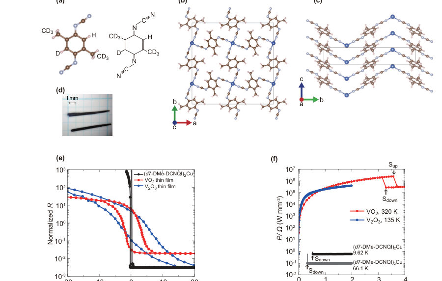
<figcaption class="paper-figure-caption"><b>Fig 1.</b> FIG. 1. Structure and transport properties of (d7-DMe-DCNQI)2Cu. (a) Molecular structure of (d7-DMe-DCNQI)2Cu. The d7 means that the seven 1H sites are substituted with deuterons. (b) (d7-DMe-DCNQI)2Cu structure viewed down the c-axis. The space group is I41/a, and the structure consists of planar DCNQI molecules stacked along the c-axis. (c) (d7-DMe-DCNQI)2Cu structure viewed down the a-axis. In the insulating phase, the threefold superlattice occurs along the stacking axis. The charge ordering at the Cu sites follows a Cu+ Cu+ Cu2+ pattern. (d) Photograph of needlelike crystals of (d7-DMe-DCNQI)2Cu. (e) T −Tc dependence of the normalized resistance for VO2 and V2O3 thin films and...</figcaption>
</figure>
<figure class="paper-figure-card">
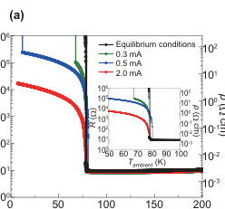
<figcaption class="paper-figure-caption"><b>Fig 2.</b> FIG. 3. Transport properties of (d7-DMe-DCNQI)2Cu. (a) Ambient temperature dependence of the resistance of (d7- DMe-DCNQI)2Cu. The black plot shows the two-wire resis- tance under equilibrium conditions, while the other plots show the two-wire resistance under applied constant currents (0.3 mA, 0.5 mA, 2.0 mA). The inset shows the behavior of the re- sistance around the transition temperature. The data under equilibrium conditions are the same as the black data shown in Fig. 1(e). (b) Two-probe I(current)–V (voltage) character- istics at 9.62 K and 66.1 K for (d7-DMe-DCNQI)2Cu. Sdown indicates the switching points when the current is decreased. These data yield the current dependence of...</figcaption>
</figure>
<figure class="paper-figure-card">
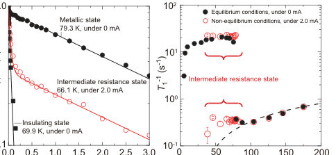
<figcaption class="paper-figure-caption"><b>Fig 3.</b> FIG. 4. 1H-NMR relaxation curves and relaxation rate (T −1 1 ) of (d7-DMe-DCNQI)2Cu. (a) 1H-NMR relaxation curves for the metallic and insulating states under 0 mA, and the inter- mediate resistance state under 2.0 mA. The black solid curves represent fits to single-exponential functions for the metallic and insulating states, while the red solid curve represents a fit to a double-exponential function for the intermediate re- sistance state under 2.0 mA. The excellent fit of the double- exponential function provides evidence for the coexistence of the metallic and insulating phases in the intermediate resis- tance state. (b) Ambient temperature dependence of T −1 1 un- der 0 mA (equilibrium...</figcaption>
</figure>
<figure class="paper-figure-card">
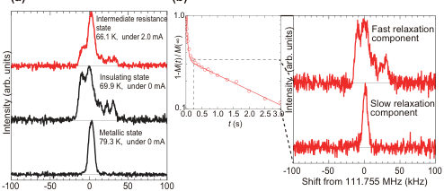
<figcaption class="paper-figure-caption"><b>Fig 4.</b> FIG. 5. 1H-NMR spectra of (d7-DMe-DCNQI)2Cu. (a) 1H- NMR spectra of the metallic and insulating states under 0 mA, and the intermediate resistance state under 2.0 mA. (b) Decomposed 1H-NMR spectra of the intermediate resistance state. The fast relaxation component corresponds to the spec- trum that recovers within 0.25 s after the saturation comb pulses, while the slow relaxation component corresponds to the spectrum that recovers after 0.25 s.</figcaption>
</figure>
<figure class="paper-figure-card">
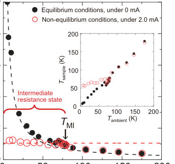
<figcaption class="paper-figure-caption"><b>Fig 5.</b> FIG. 6. Ambient temperature dependence of the 1H-NMR signal intensity, which is inversely proportional to the sample temperature. The black closed circles represent the intensity under 0 mA, while the open red circles represent the intensity under 2.0 mA. The intensity under 0 mA exhibits inverse pro- portionality with ambient temperature (black dashed line), demonstrating that the sample temperature is equal to the ambient temperature. In the region where Tambient &gt; 79 K (TMI), the intensity under 2.0 mA is the same as that un- der 0 mA, indicating that the sample temperature is equal to the ambient temperature even under 2.0 mA. However, it remains nearly constant in the region where...</figcaption>
</figure>
</div>

<p><strong>Summary.</strong> This paper investigates resistive switching in a bulk organic conductor exhibiting a sharp metal-insulator transition. By combining electrical measurements with solid-state NMR, the authors characterize a stable, intermediate resistance state. Their findings strongly suggest that this state arises from the spatial coexistence of metallic and insulating domains, offering new insights into nonlinear transport in correlated systems.</p>
<p><strong>Why it may be interesting.</strong> The work provides experimental evidence of phase coexistence and non-equilibrium dynamics in a correlated material system, which is highly relevant to understanding charge localization and transport mechanisms in strongly correlated electronic materials.</p>
<details>
<summary>Detailed structure</summary>
<p><strong>Main problem.</strong> The study aims to elucidate the fundamental physics governing volatile resistive switching in correlated-electron systems, particularly when Joule heating is the primary driving force.</p>
<p><strong>Main result.</strong> The authors observed a self-organized, intermediate resistance state in the bulk organic conductor, which NMR analysis suggests involves the spatial coexistence of metallic and insulating phases.</p>
<p><strong>Method.</strong> The research combines electrical transport measurements (I-V curves) with microscopic probes using solid-state $^1	ext{H-NMR}$ spectroscopy to analyze local magnetic environments and temperature.</p>
<p><strong>Model / system.</strong> The system is the bulk organic conductor $(	ext{d}_7	ext{-DMe-DCNQI})_2	ext{Cu}$, which exhibits a sharp, first-order Metal-Insulator Transition (MIT) and possesses low heat dissipation compared to typical thin films.</p>
<p><strong>Key observables.</strong> Resistance ratio ($    ext{R}<em ext_metal="ext{metal">{    ext{ins}}/  ext{R}</em> &gt; 10^5$), $I-V$ characteristics, and the temperature dependence of $^1	ext{H-NMR}$ relaxation rates ($T_1^{-1}$).}</p>
<p><strong>Important parameters / regimes.</strong> Sharp, first-order MIT near $79	ext{ K}$; low heat dissipation regime; current densities up to $2.0 	ext{ mA}$.</p>
<p><strong>Assumptions / limitations.</strong> The analysis assumes that the intermediate resistance state is a non-equilibrium steady state, and that the contribution of the metallic phase at low temperatures can be neglected for spectral reconstruction.</p>
<p><strong>Figures summary.</strong> Figures show the material's structure and MIT dependence on temperature; transport measurements detail $I-V$ curves; NMR relaxation curves compare metallic, insulating, and intermediate states; and spectral reconstructions confirm the coexistence of phases.</p>
<p><strong>Paper structure.</strong> The paper progresses by first establishing the unique experimental conditions (bulk, low heat dissipation) in the organic conductor. It then uses transport measurements to characterize the resistive switching. Finally, it employs detailed NMR analysis to probe the microscopic nature of the intermediate state, suggesting phase coexistence.</p>
</details>
<details>
<summary>Abstract</summary>
<p>Volatile resistive switching in correlated-electron systems, characterized by an abrupt resistance decrease under applied current, is crucial for developing next-generation electronics. Despite its technological significance, the underlying physics remains elusive. Inorganic thin films on substrates---the widely studied platform for resistive switching---usually exhibit broad temperature-induced metal-insulator transitions (MITs) and substantial heat dissipation. These factors complicate the nonlinear thermal effect induced by Joule heating, a key contributor to resistive switching, rendering it excessively complex and difficult to decipher. Here we investigate a resistive-switched state in the bulk organic conductor ($d$7-DMe-DCNQI)$_{2}$Cu, which undergoes an extremely sharp first-order MIT and exhibits weak heat dissipation, using resistance and $^{1}$H-NMR measurements. These extreme conditions make the Joule heating effect vivid, allowing us to observe peculiar phenomena, including temperature locking to the MIT and `inverse Ohm's law'---an inverse proportionality between voltage and current. These findings provide fundamental insights into the nonlinear thermal effect in resistive switching, offering a pathway to efficient resistive-switching technologies.</p>
</details>
<p><sub><a href="#top">↑ back to top</a></sub></p>

<p><a id="paper-2608.19448"></a></p>
<h3 id="efficient-classical-simulation-of-weakly-interacting-fermion-dynamics"><a href="http://arxiv.org/abs/2608.19448v1">Efficient Classical Simulation of Weakly Interacting Fermion Dynamics</a></h3>
<p><strong>Authors:</strong> Chu Zhao, Iman Marvian, Yu Tong<br>
<strong>Type:</strong> theory · <strong>Category:</strong> numerical methods · <strong>PDF:</strong> <a href="https://arxiv.org/pdf/2608.19448v1">https://arxiv.org/pdf/2608.19448v1</a><br>
<strong>Analysis basis:</strong> full PDF text, analyzed in chunks
<strong>Topic relevance:</strong> <code>Keldysh / 2PI / non-Gaussian methods</code> <strong>1/5</strong> · <code>analog quantum simulation</code> <strong>1/5</strong> · <code>methods for driven-dissipative</code> <strong>1/5</strong></p>
<div class="figure-strip-hint">↔ Scroll figures horizontally</div>
<div class="paper-figures-scroll">
<figure class="paper-figure-card">
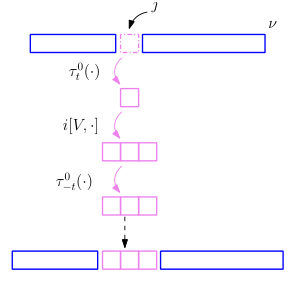
<figcaption class="paper-figure-caption"><b>Fig 1.</b> Figure 1: An illustration of one iteration of SampleNext, supposing the input is (ω, ν, t). The updating of the weight ω is omitted in the above diagram. First, one Majorana mode j is chosen randomly from ν. Then, each violet arrow means to compute the action of a superoperator on the previously sampled Majorana monomial and then sample from the result. The final black dashed arrow means to multiply the final sampled monomial by the remaining modes from the input ν.</figcaption>
</figure>
</div>

<p><strong>Summary.</strong> This work develops provably efficient classical algorithms to simulate the real-time evolution of weakly interacting fermionic systems. By analyzing the perturbative expansion in the interaction strength, the authors establish specific parameter regimes where the simulation remains classically tractable. This advances the field by providing rigorous complexity bounds for dynamics in weakly perturbed, local quantum many-body systems.</p>
<p><strong>Why it may be interesting.</strong> The rigorous control over sampling variance and the explicit derivation of polynomial-time algorithms for real-time dynamics in weakly interacting systems provide powerful, general tools for studying non-equilibrium quantum phenomena.</p>
<details>
<summary>Detailed structure</summary>
<p><strong>Main problem.</strong> The paper addresses the challenge of efficiently simulating the real-time dynamics of weakly interacting fermionic systems by computing the expectation value of a local observable.</p>
<p><strong>Main result.</strong> It proposes a polynomial-time algorithm for estimating this expectation value in the weakly interacting regime, with extensions to quasi-polynomial time and regimes exhibiting Anderson localization.</p>
<p><strong>Method.</strong> The core method involves analyzing the perturbative expansion (Dyson series) of the time evolution operator in the Heisenberg picture, utilizing a randomized sampling algorithm controlled by the Majorana 1-norm.</p>
<p><strong>Model / system.</strong> The system is a weakly interacting fermionic system on a D-dimensional lattice, governed by a Hamiltonian $H = H_0 + \lambda V$, where $H_0$ is the non-interacting part and $\lambda V$ is the weak interaction perturbation.</p>
<p><strong>Key observables.</strong> The expectation value of a local observable $A$ at time $t$, i.e., $   ext{Tr}(
ho_0 e^{iHt} A e^{-iHt})$.</p>
<p><strong>Important parameters / regimes.</strong> The critical parameters are the interaction strength $\lambda$ and time $t$, defining regimes like $\lambda|t|^{2D+1}=\mathcal{O}(1)$ for polynomial time.</p>
<p><strong>Assumptions / limitations.</strong> The Hamiltonian must be geometrically local on a D-dimensional lattice, and the analysis relies on controlling the error using the Majorana 1-norm.</p>
<p><strong>Paper structure.</strong> The paper establishes the problem, derives the perturbative expansion, introduces the randomized sampling algorithm based on the Majorana 1-norm, and presents theorems defining the convergence regimes and computational complexity.</p>
</details>
<details>
<summary>Abstract</summary>
<p>We consider the task of simulating the real-time dynamics of weakly interacting fermionic systems. In particular, we focus on computing the expectation value of a local observable $A$ at time $t$. By analyzing the convergence of the perturbative expansion in the interaction strength $λ$ for the Heisenberg-picture observable, we propose a polynomial-time algorithm for estimating this expectation value in the weakly interacting regime $λ|t|^{2D+1}=\mathcal{O}(1)$, when the Hamiltonian is geometrically local on a $D$-dimensional lattice. Importantly, this condition is independent of the system size. If the goal is instead to approximate the time-evolved observable in normalized Frobenius norm, we extend the convergence regime to $λ|t|=\mathcal{O}(1)$ with quasi-polynomial runtime. When the non-interacting part exhibits Anderson localization, our polynomial-time algorithm can be extended up to $λ|t|=\mathcal{O}(1)$, modulo polylogarithmic factors. Our algorithm brings together ideas from continuous-time QMC, diagrammatic QMC, and Majorana Propagation, but with a new Heisenberg-picture operator-growth analysis that makes the sampling complexity rigorously controllable. This leads to provably efficient classical algorithms in regimes where the interaction is weak enough that the sampling variance remains bounded independently of system size. Together, these results identify broad regimes in which weak interactions, locality, and localization can be leveraged to make real-time fermionic dynamics classically tractable.</p>
</details>
<p><sub><a href="#top">↑ back to top</a></sub></p>

<p><a id="paper-2608.19715"></a></p>
<h3 id="iterative-projection-based-embedding-scheme-combined-with-variational-quantum-eigensolver"><a href="http://arxiv.org/abs/2608.19715v1">Iterative Projection-Based Embedding Scheme Combined with Variational Quantum Eigensolver</a></h3>
<p><strong>Authors:</strong> Hongseok Choi, Kyungmin Kim, Young Min Rhee<br>
<strong>Type:</strong> theory · <strong>Category:</strong> strongly correlated electrons · <strong>PDF:</strong> <a href="https://arxiv.org/pdf/2608.19715v1">https://arxiv.org/pdf/2608.19715v1</a><br>
<strong>Analysis basis:</strong> full PDF text, analyzed in chunks
<strong>Topic relevance:</strong> <code>Keldysh / 2PI / non-Gaussian methods</code> <strong>1/5</strong> · <code>methods for driven-dissipative</code> <strong>1/5</strong></p>
<div class="figure-strip-hint">↔ Scroll figures horizontally</div>
<div class="paper-figures-scroll">
<figure class="paper-figure-card">
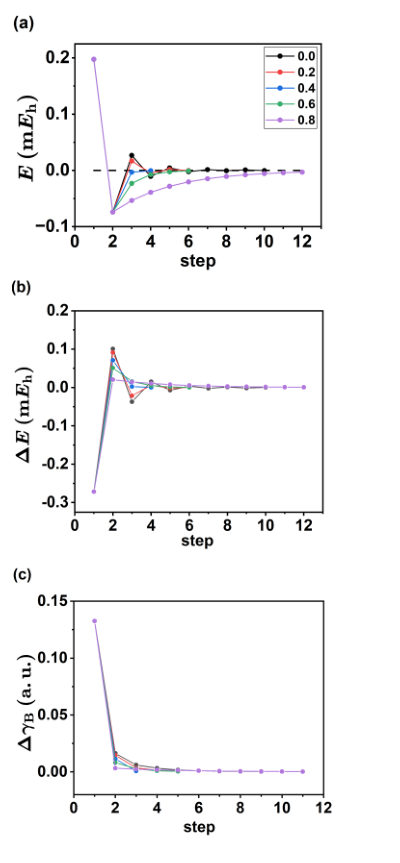
<figcaption class="paper-figure-caption"><b>Fig 1.</b> Figure 1: Convergence of the iterative embedding for a water dimer system with varying damping factors α: (a) the energy difference from the converged value, as a function of the macro-iteration step, with the converged value set to zero (dashed line), (b) the changes of the total energy at each successive macro-iteration step, ∆E = Ei+1 −Ei, and (c) the stepwise environmental density change ∆γB = ∥γ(i+1) B −γ(i) B ∥F/dim(γB), with ∥· ∥F denoting Frobenius norm defined as ∥A∥2 F = P</figcaption>
</figure>
<figure class="paper-figure-card">
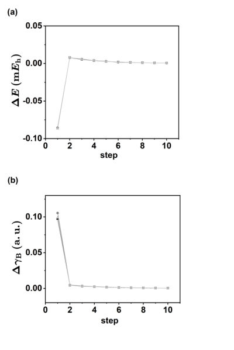
<figcaption class="paper-figure-caption"><b>Fig 2.</b> Figure 2: Convergence of the iterative embedding procedure for an ethanol molecule with three molecular orbital localization schemes: (a) change in total energy at each macro- iteration step and (b) change in the environmental density. SPADE (■), Boys (•), and Pipek- Mezey (▲) schemes yield nearly identical convergence profiles, demonstrating the robustness of the iterative procedure with respect to the choice of a localization scheme.</figcaption>
</figure>
<figure class="paper-figure-card">

<figcaption class="paper-figure-caption"><b>Fig 3.</b> Figure 3: (a) Molecular structure of the tested system consisting of a central methylenimine (CH2NH) molecule sandwiched between two benzene rings. The twisted dihedral angle around C=N is shown with an arrow. (b) Convergence shown with the total energy change at each iteration step. (c) Convergence shown with the environmental density change at each iteration step. (d) Energy correction due to iterative embedding for VQE-in-HF (red) and CASCI-in-HF (blue) as a function of the dihedral angle.</figcaption>
</figure>
<figure class="paper-figure-card">

<figcaption class="paper-figure-caption"><b>Fig 4.</b> Figure 4: Comparison of non-iterative to iterative energy correction with VQE-in-HF (red) versus CASCI to CASSCF energy correction (black) with CH2NH at different H−C=N−H dihedral angles.</figcaption>
</figure>
<figure class="paper-figure-card">

<figcaption class="paper-figure-caption"><b>Fig 5.</b> Figure 5 shows this penalty energy contribution as a function of the level-shift parameter µ</figcaption>
</figure>
</div>

<p><strong>Summary.</strong> This paper presents an iterative embedding method combining Variational Quantum Eigensolver (VQE) with projection-based techniques to accurately model large molecular systems. By allowing the environment to self-consistently respond to the embedded subsystem's electronic structure, it overcomes limitations of simpler, one-shot approximations. The method is shown to be numerically robust and highly accurate across various molecular geometries.</p>
<p><strong>Why it may be interesting.</strong> This work directly addresses the challenge of multiscale modeling in quantum chemistry, providing a robust, self-consistent quantum-classical hybrid approach highly relevant for simulating complex molecular interactions.</p>
<details>
<summary>Detailed structure</summary>
<p><strong>Main problem.</strong> The core problem is extending quantum chemical calculations to large, multiscale systems by accurately treating a chemically active subsystem at high theory levels while modeling its environment affordably.</p>
<p><strong>Main result.</strong> The proposed iterative embedding framework successfully converges, yielding energies and potential energy surfaces that accurately reproduce fully correlated reference calculations.</p>
<p><strong>Method.</strong> The authors developed an iterative projection-based embedding scheme that alternates between a VQE treatment of the subsystem and a mean-field refinement of the environment until mutual self-consistency is achieved.</p>
<p><strong>Model / system.</strong> The method is tested on a composite system: a methylenimine (CH2NH) molecule sandwiched between two benzene rings, where the dihedral angle is varied from 0 to 90 degrees.</p>
<p><strong>Key observables.</strong> Total energy, environmental density change (Delta gamma_B), and the potential energy surface (PES) as a function of dihedral angle.</p>
<p><strong>Important parameters / regimes.</strong> The number of macro-iterations (converging within ~10 steps), the damping factor (alpha), and the dihedral angle ($ heta$).</p>
<p><strong>Assumptions / limitations.</strong> The scheme assumes that the environment density can be iteratively updated to respond self-consistently to the subsystem's electronic structure, avoiding the errors of conventional one-shot embedding.</p>
<p><strong>Figures summary.</strong> Figures demonstrate the convergence of the energy difference and environmental density change for both a water dimer system (varying damping factors) and an ethanol molecule (testing different MO localization schemes).</p>
<p><strong>Paper structure.</strong> The paper introduces the iterative projection-based embedding framework, details the alternating VQE-in-SCF and SCF-in-SCF steps, validates its convergence using small test systems, and finally applies it to the complex $  ext{CH}_2   ext{NH}$/benzene sandwich system.</p>
</details>
<details>
<summary>Abstract</summary>
<p>Quantum embedding methods offer a promising route to extend quantum chemical calculations to large multiscale systems by treating a chemically important subsystem at a high level of theory while describing its surrounding environment at an affordable level. The methods are also quite relevant for quantum computing approaches based on hardware with limited resources. Here, we present an iterative projection-based embedding framework combined with VQE, in which the environment density is allowed to respond self-consistently to the refined electronic structure of the embedded subsystem described by VQE. Unlike conventional one-shot approaches where the environment remains frozen after the initial orbital optimization, the proposed iterative scheme alternates between the VQE-level treatment of the subsystem and a mean-field-level refinement of the environment until mutual self-consistency is achieved. The convergence behavior of the scheme is first examined using several small test systems. Its practical applicability is then demonstrated with a composite system with a CH2NH molecule sandwiched by two benzene rings, with the C=N dihedral angle rotating from 0 to 90 deg. The iterative procedure consistently converges within ~10 iteration steps across all tested geometries, yielding energies below the conventional one-shot embedding results. The converged results well reproduce the fully correlated reference energy employing the same active space, and the resulting potential energy surface with respect to the dihedral rotation is also in good agreement with the reference one. These results demonstrate that our iterative embedding framework is numerically robust and physically sound, yielding a self-consistent and reliable treatment of inter-subsystem correlation. We expect that its formulation will be particularly compatible with the emerging paradigm of quantum-classical hybrid computing.</p>
</details>
<p><sub><a href="#top">↑ back to top</a></sub></p>

<p><a id="paper-2608.19485"></a></p>
<h3 id="statistical-complexity-from-fluctuations-in-the-information-content"><a href="http://arxiv.org/abs/2608.19485v1">Statistical complexity from fluctuations in the information content</a></h3>
<p><strong>Authors:</strong> Renio S. Mendes, Sergio Picoli, Evaldo M. F. Curado<br>
<strong>Type:</strong> theory · <strong>Category:</strong> statistical mechanics · <strong>PDF:</strong> <a href="https://arxiv.org/pdf/2608.19485v1">https://arxiv.org/pdf/2608.19485v1</a><br>
<strong>Analysis basis:</strong> full PDF text, analyzed in chunks
<strong>Topic relevance:</strong> <code>driven-dissipative phase transition</code> <strong>1/5</strong> · <code>non-equilibrium universality</code> <strong>1/5</strong></p>
<div class="figure-strip-hint">↔ Scroll figures horizontally</div>
<div class="paper-figures-scroll">
<figure class="paper-figure-card">

<figcaption class="paper-figure-caption"><b>Fig 1.</b> FIG. 1. (a) C(p) for two states. The maxima occur at p∗≈0.9168 and 1 −p∗, while C = 0</figcaption>
</figure>
<figure class="paper-figure-card">

<figcaption class="paper-figure-caption"><b>Fig 2.</b> FIG. 2. (a) C(p) for a W-state system along the path p1 = p and pα = (1 −p)/(W −1) (α =</figcaption>
</figure>
<figure class="paper-figure-card">

<figcaption class="paper-figure-caption"><b>Fig 3.</b> FIG. 3. Statistical complexity measures for the two-dimensional Ising model. The dashed vertical</figcaption>
</figure>
<figure class="paper-figure-card">

<figcaption class="paper-figure-caption"><b>Fig 4.</b> FIG. 4. Logistic map complexity. SDL, LMC, MPR, and the present measure C are shown as</figcaption>
</figure>
<figure class="paper-figure-card">

<figcaption class="paper-figure-caption"><b>Fig 5.</b> FIG. 5. Complexity–entropy plane for the logistic map obtained from binned probability distribu-</figcaption>
</figure>
</div>

<p><strong>Summary.</strong> This paper introduces a statistical complexity measure derived from the variance of information content, arguing it surpasses entropy by quantifying structural diversity. It demonstrates that this measure connects directly to thermodynamic concepts, showing proportionality to energy fluctuations and peaking at continuous phase transitions like in the 2D Ising model. The methodology is broadly applicable, tested across chaotic maps and correlated noise, making it a versatile tool for characterizing complex physical systems.</p>
<p><strong>Why it may be interesting.</strong> The direct link between a fluctuation-based complexity measure and fundamental thermodynamic quantities like heat capacity, especially its singular behavior at critical points, provides a powerful, non-equilibrium diagnostic tool for phase transitions.</p>
<details>
<summary>Detailed structure</summary>
<p><strong>Main problem.</strong> To propose and validate a measure of statistical complexity based on the variance of the information content, arguing it is a superior descriptor compared to entropy alone because it captures structural diversity.</p>
<p><strong>Main result.</strong> The proposed complexity measure, $C$, vanishes for ordered and equiprobable states, achieving maxima in intermediate regimes, and is shown to be proportional to energy fluctuations and heat capacity for Boltzmann-Gibbs systems.</p>
<p><strong>Method.</strong> The complexity $C$ is defined using the variance of the information content, $C = \langle (I - S)^2 
angle$, and is applied to various statistical ensembles and dynamical systems.</p>
<p><strong>Model / system.</strong> The analysis covers general statistical systems, the two-dimensional Ising model, chaotic maps (like the logistic map), and fractional Gaussian noise, allowing for extensions to quantum systems via density operators.</p>
<p><strong>Key observables.</strong> Statistical complexity ($C$), Shannon entropy ($S$), Energy fluctuation ($ ext{Var}(H)$), and generalized complexity measures ($C_q$).</p>
<p><strong>Important parameters / regimes.</strong> Temperature ($T$), control parameters ($r, a$), Hurst exponent ($h$), and the Tsallis parameter ($q$).</p>
<p><strong>Assumptions / limitations.</strong> The measure is assumed to capture structural diversity beyond what entropy measures, and the analysis relies on established connections to thermodynamics for BG systems.</p>
<p><strong>Figures summary.</strong> Figures illustrate $C(p)$ for small state systems, show $C$ peaking at critical temperatures for the Ising model, and map complexity vs. entropy for various dynamical systems like the logistic map and fGn.</p>
<p><strong>Paper structure.</strong> The paper develops the measure $C$ by analyzing basic probability distributions, establishes its thermodynamic connection to energy fluctuations, and then applies it systematically to diverse physical models including phase transitions, chaotic dynamics, and correlated noise.</p>
</details>
<details>
<summary>Abstract</summary>
<p>We argue that the variance of the information content ($C$), an information-theoretic quantity, can be naturally interpreted as a measure of statistical complexity. We show that $C$ satisfies widely accepted criteria for statistical complexity measures: it vanishes for both ordered and equiprobable states, while attaining maxima in intermediate regimes, typically shifted toward order. This interpretation establishes direct connections with thermodynamics and phase transitions: for systems obeying Boltzmann--Gibbs statistics, $C$ is extensive and directly proportional to energy fluctuations and heat capacity. Moreover, unlike other statistical complexity measures, it attains a maximum at continuous phase transitions, as illustrated for the two-dimensional Ising model. Applications to chaotic maps and fractional Gaussian noise further indicate that $C$ captures nontrivial dynamical structure in different classes of correlated systems.</p>
</details>
<p><sub><a href="#top">↑ back to top</a></sub></p>

<p><a id="paper-2608.19779"></a></p>
<h3 id="an-irreducible-quantum-advantage-in-aligning-world-models-with-reality"><a href="http://arxiv.org/abs/2608.19779v1">An Irreducible Quantum Advantage in Aligning World Models with Reality</a></h3>
<p><strong>Authors:</strong> Josep Lumbreras, Hailan Ma, Jayne Thompson, Mile Gu<br>
<strong>Type:</strong> theory · <strong>Category:</strong> quantum information and computing · <strong>PDF:</strong> <a href="https://arxiv.org/pdf/2608.19779v1">https://arxiv.org/pdf/2608.19779v1</a><br>
<strong>Analysis basis:</strong> full PDF text, analyzed in chunks
<strong>Topic relevance:</strong> <code>quantum measurements</code> <strong>1/5</strong></p>
<div class="figure-strip-hint">↔ Scroll figures horizontally</div>
<div class="paper-figures-scroll">
<figure class="paper-figure-card">

<figcaption class="paper-figure-caption"><b>Fig 1.</b> Figure 1. Classical and quantum world models. The true world represents reality (a). At each time step, it re- ceives an action at and returns an outcome yt+1 that consists of an observation and reward. A world model reproduces this input–output behavior through recurrent internal dynamics, updating its memory from one simulated step to the next. In a classical world model (b), a classical register with a finite number of bits carries the memory, and it evolves under clas- sical stochastic updates. In a quantum world model (c), the memory is encoded in a finite number of qubits and evolves through quantum operations.</figcaption>
</figure>
<figure class="paper-figure-card">

<figcaption class="paper-figure-caption"><b>Fig 2.</b> Figure 2. The resettable FRDN clock world. The dis- played signs illustrate a representative payoff regime: Wait offers a reward +RW if the clock advances but risks a failure cost −CW ; Maintain accepts the known cost −CM of an im- mediate reset; and Probe also resets, with reward +RP or cost −CP determined by whether the clock would have advanced. The diagram thus contrasts risky continuation under Wait, a certain outcome under Maintain, and an outcome-dependent bet under Probe, creating a nontrivial decision problem.</figcaption>
</figure>
<figure class="paper-figure-card">

<figcaption class="paper-figure-caption"><b>Fig 3.</b> Figure 4. Average Wait action-value error for one-step setting. The one-step rewards are set to RW = CW = CM = CP = 1 and RP = −1, with γ = 0. Consequently, the plot- ted quantity for each T is 1 T PT t=1 Qopt ⋆,W (←− h t) −Qopt M,W (←− h t) . The dashed red line marks the dimension-independent lower bound on its asymptotic average derived in Appendix B 3. Blue, orange, and green correspond to N = 5, N = 50, and N = 500, respectively. Here the average Q-gap represents the errors of classical models, and lower curves mean better mod- els with low error. Larger memories postpone the discrepancy to later clock ages but do not eliminate its asymptotic aver- age. The qutrit world model has zero...</figcaption>
</figure>
<figure class="paper-figure-card">

<figcaption class="paper-figure-caption"><b>Fig 4.</b> Figure 3. Conditional Tick probabilities. Probability of one additional Tick after ←− h t for λ = 0.4 and α = π/ √</figcaption>
</figure>
</div>

<p><strong>Summary.</strong> This theoretical paper proves that classical world models are fundamentally incapable of perfectly simulating certain complex, history-dependent physical realities. It establishes an irreducible quantum advantage by showing that quantum models using minimal resources (a single qutrit) can perfectly align with the true world's optimal policies, unlike their classical counterparts.</p>
<p><strong>Why it may be interesting.</strong> It provides a theoretical benchmark showing where quantum resources are necessary for accurate modeling of complex stochastic processes, which is relevant for quantum control and open quantum system simulation.</p>
<details>
<summary>Detailed structure</summary>
<p><strong>Main problem.</strong> The paper addresses the fundamental limitation of classical world models in accurately simulating complex, history-dependent environments compared to true reality.</p>
<p><strong>Main result.</strong> It demonstrates an irreducible quantum advantage by showing that quantum world models using a single qutrit can perfectly reproduce true worlds where all finite classical models fail to maintain alignment with optimal policies.</p>
<p><strong>Method.</strong> The authors construct specific true worlds and develop rigorous metrics (e.g., Mean Decision Loss) to quantify the failure of classical models, contrasting this with the exact representation capability of quantum models.</p>
<p><strong>Model / system.</strong> The system involves a true, complex environment evolving over discrete time steps, which is modeled by both classical Hidden Markov Models (HMMs) with finite memory and quantum world models utilizing a single qutrit.</p>
<p><strong>Key observables.</strong> Expected cumulative reward (Return), Action-Value Function, Value Function, and specialized metrics like Mean Decision Loss ($\ell_M(F)$).</p>
<p><strong>Important parameters / regimes.</strong> Memory size ($N$ for classical models), discount factor ($\gamma$), and the irreducible error bound ($\epsilon$).</p>
<p><strong>Assumptions / limitations.</strong> The argument relies on the existence of constructed true worlds that expose the inherent limitations of finite classical memory representations.</p>
<p><strong>Figures summary.</strong> Figure 1 compares the true world, a classical world model (using a classical register memory), and a quantum world model (using qubits memory) in their ability to represent the environment.</p>
<p><strong>Paper structure.</strong> The paper first establishes the framework of world models and then develops advanced diagnostics (Deviancy, Decision Loss) to prove that classical models fail for certain true worlds, concluding with the demonstration of perfect alignment using quantum models.</p>
</details>
<details>
<summary>Abstract</summary>
<p>World models provide digital simulacra of the true world, allowing agents to be trained and tested before costly real-world deployment. At each time step, they receive an action and generate an observation and reward matching the statistics of the true world. In complex environments where present outcomes depend on events far in the past, this requires memory. One might expect that, by increasing memory, we can always build a model accurately enough to align the optimal agent policies of the real and virtual worlds. We show that this is false for classical world models, even when the true world itself is classical. We construct true worlds for which every finite classical model fails along the same possible trajectory: it either loses the ability to distinguish actions when the true world clearly prefers one, or repeatedly assigns the highest expected reward to suboptimal actions. Its expected-reward estimates also retain a nonvanishing average error. In contrast, each such true world admits a quantum world model using a single qutrit that reproduces it exactly: its reward estimates and preferred actions always match those of the true world, ensuring that the optimal policies of the real and virtual worlds remain perfectly aligned.</p>
</details>
<p><sub><a href="#top">↑ back to top</a></sub></p>

<p><a id="paper-2608.20273"></a></p>
<h3 id="analytical-solutions-of-the-generalized-klein-gordon-oscillator-in-som-raychaudhuri-space-time-via-the-extended-nikiforov-uvarov-method"><a href="http://arxiv.org/abs/2608.20273v1">Analytical Solutions of the Generalized Klein-Gordon Oscillator in Som-Raychaudhuri Space-Time via the Extended Nikiforov-Uvarov Method</a></h3>
<p><strong>Authors:</strong> Hale Karayer, Tolga Celik, Dogan Demirhan<br>
<strong>Type:</strong> theory · <strong>Category:</strong> other · <strong>PDF:</strong> <a href="https://arxiv.org/pdf/2608.20273v1">https://arxiv.org/pdf/2608.20273v1</a><br>
<strong>Analysis basis:</strong> full PDF text, analyzed in chunks
<strong>Topic relevance:</strong> <code>Keldysh / 2PI / non-Gaussian methods</code> <strong>1/5</strong></p>
<div class="figure-strip-hint">↔ Scroll figures horizontally</div>
<div class="paper-figures-scroll">
<figure class="paper-figure-card">

<figcaption class="paper-figure-caption"><b>Fig 1.</b> Fig. 1: Radial wave functions involving biconfluent Heun polynomials for the gener- alized Klein–Gordon oscillator in the Som–Raychaudhuri space–time with α = 0.8. Panels (a) and (b) correspond to the linear-potential solutions given by Eqs. (36) and (39), whereas panels (c) and (d) represent the Cornell-type potential solutions given by Eqs. (50) and (53). The plots are shown for different quantum numbers (n, l) using the parameter set M = e = ΦB = ω = λ = B0 = Ω= k = 1, while ξ1 = 2 and ξ2 = 1 are adopted for the Cornell-type potential. The radial wave functions are presented up to an arbitrary normalization constant and are used to illustrate the localization properties and spatial...</figcaption>
</figure>
</div>

<p><strong>Summary.</strong> This paper analytically solves the generalized Klein-Gordon oscillator equation in the Som-Raychaudhuri space-time using the extended Nikiforov-Uvarov method. It derives explicit energy spectra and eigenfunctions for linear and Cornell potentials, showing how topological defects and magnetic fields influence the quantum energy levels. The work provides a systematic algebraic framework for solving relativistic quantum problems in curved backgrounds.</p>
<p><strong>Why it may be interesting.</strong> While focused on curved spacetime QFT, the use of advanced analytical techniques like the extended NU method to solve complex differential equations is a valuable theoretical tool applicable to other non-standard quantum Hamiltonians.</p>
<details>
<summary>Detailed structure</summary>
<p><strong>Main problem.</strong> The study aims to find exact analytical solutions for the generalized Klein-Gordon oscillator equation within the curved Som-Raychaudhuri space-time.</p>
<p><strong>Main result.</strong> Analytical solutions for the energy eigenvalues and eigenfunctions are obtained for both linear and Cornell potential models, expressed in terms of biconfluent Heun polynomials.</p>
<p><strong>Method.</strong> The research employs the extended Nikiforov-Uvarov (NU) method, a powerful analytical technique used to solve the resulting radial differential equations.</p>
<p><strong>Model / system.</strong> The system models a relativistic quantum particle governed by the Klein-Gordon equation, incorporating effects from a uniform magnetic field and an oscillator potential in the Som-Raychaudhuri space-time.</p>
<p><strong>Key observables.</strong> Energy eigenvalues ($E_n, \ell$) and corresponding eigenfunctions ($\psi(r)$).</p>
<p><strong>Important parameters / regimes.</strong> Topological parameter ($\alpha$), magnetic field strength ($B_0$), oscillator frequency ($\omega$), and particle mass ($M$).</p>
<p><strong>Assumptions / limitations.</strong> The analysis assumes the solvability of the radial equation using the extended NU formalism and restricts the analysis to specific potential forms (linear and Cornell).</p>
<p><strong>Figures summary.</strong> Figures illustrate the radial wave functions ($\psi(r)$) for different quantum numbers and potential types, while tables present calculated positive energy eigenvalues.</p>
<p><strong>Paper structure.</strong> The paper reviews the KG oscillator in this space-time, introduces the extended NU method, derives solutions for the linear and Cornell potentials, and concludes by discussing the physical implications of the derived spectra.</p>
</details>
<details>
<summary>Abstract</summary>
<p>In this study, we present an analytical approach based on the extended Nikiforov-Uvarov method to solve the generalized Klein-Gordon oscillator in the presence of a uniform magnetic field within the Som-Raychaudhuri space-time. Exact eigenstate solutions are obtained for two distinct potential models, namely the linear potential and the Cornell potential. The corresponding energy eigenvalues are determined, and the associated eigenfunctions are analyzed and illustrated graphically.</p>
</details>
<p><sub><a href="#top">↑ back to top</a></sub></p>

<p><a id="paper-2608.19465"></a></p>
<h3 id="antiferromagnetic-order-and-lattice-response-in-dycuasmath774math"><a href="http://arxiv.org/abs/2608.19465v1">Antiferromagnetic order and lattice response in DyCuAs$_2$</a></h3>
<p><strong>Authors:</strong> M. G. Kim, J. -W. Kim, P. Ryan, D. Evans, E. D. Mun<br>
<strong>Type:</strong> experiment · <strong>Category:</strong> strongly correlated electrons · <strong>PDF:</strong> <a href="https://arxiv.org/pdf/2608.19465v1">https://arxiv.org/pdf/2608.19465v1</a><br>
<strong>Analysis basis:</strong> full PDF text, analyzed in chunks
<strong>Topic relevance:</strong> <code>analog quantum simulation</code> <strong>1/5</strong></p>
<div class="figure-strip-hint">↔ Scroll figures horizontally</div>
<div class="paper-figures-scroll">
<figure class="paper-figure-card">

<figcaption class="paper-figure-caption"><b>Fig 1.</b> FIG. 1. (a) Temperature dependence of the electrical resis- tivity, ρ(T ), of DyCuAs2 measured at H = 0 (closed symbols) and H = 90 kOe (solid line) up to 300 K. Inset: Enlarged view of ρ(T ) between 0 and 60 K. (b) M(H) curves of DyCuAs2 measured at T = 1.8 K for H ∥ab and H ∥c.</figcaption>
</figure>
<figure class="paper-figure-card">

<figcaption class="paper-figure-caption"><b>Fig 2.</b> Figure 1(a) presents the electrical resistivity of DyCuAs2. The zero-field electrical resistivity of DyCuAs2 up to 300 K exhibits metallic behavior at high temperatures, followed by an unexpected minimum near 15 K, as shown in Fig. 1(a). Upon further cooling, ρ(T ) increases and reaches a peak at the N´eel temperature, TN (≈7 K), before decreasing rapidly below the onset of antiferromagnetic ordering. As shown in the inset of Fig. 1(a), the resistivity minimum is progressively sup- pressed with increasing magnetic field applied parallel to the ab plane (H ∥ab) and disappears completely at H ≥30 kOe. The anisotropic M(H) curves of DyCuAs2 at 1.8 K are plotted in Fig. 1(b). For H ∥c, the...</figcaption>
</figure>
<figure class="paper-figure-card">

<figcaption class="paper-figure-caption"><b>Fig 3.</b> FIG. 2. (a) Longitudinal (θ–2θ) scans of the (0, 0, 5) struc- tural Bragg peak measured at 4.2 K and 265 K. (b) Lon- gitudinal (θ–2θ) scans of the (0, 1, 5) structural Bragg peak measured at 4.2 K and 265 K. (c) Temperature dependence of the lattice parameter c between 4 and 10 K. (d) Temper- ature dependence of the lattice parameter a between 4 and 10 K.</figcaption>
</figure>
<figure class="paper-figure-card">

<figcaption class="paper-figure-caption"><b>Fig 4.</b> FIG. 3. (a) Energy scan measured at the (0, 0, 5.5) AFM Bragg peak position at 4.2 K. The fluorescence background has been subtracted. (b) and (c) Longitudinal (θ–2θ) scans measured at 4.2 K and 10 K at the (0, 0, 3.5) and (0, 0, 5.5) AFM Bragg peak positions, respectively. (d) Temperature dependence of the AFM order parameter obtained at the (0, 0, 5.5) reflection.</figcaption>
</figure>
<figure class="paper-figure-card">

<figcaption class="paper-figure-caption"><b>Fig 5.</b> FIG. 4. (a) Integrated intensities of the AFM Bragg peaks measured at different L values in (0, 0, L). Solid symbols rep- resent the experimentally measured intensities, while open symbols denote the calculated intensities for the correspond- ing AFM Bragg peaks based on the Γ10 magnetic represen- tation (MR). (b) Antiferromagnetic magnetic structure of DyCuAs2 corresponding to the Γ10 magnetic representation.</figcaption>
</figure>
</div>

<p><strong>Summary.</strong> This experimental study characterizes the magnetic and structural properties of DyCuAs2, revealing a commensurate in-plane antiferromagnetic order below 7 K. By comparing it to other members of the RECuAs2 family, the authors propose that magnetic frustration arising from this in-plane AFM order is the common cause for an anomalous resistivity minimum, with magnetoelastic and spin-orbit interactions playing a crucial role in its robustness.</p>
<p><strong>Why it may be interesting.</strong> The strong coupling between magnetic ordering, lattice strain (magnetoelastic coupling), and anomalous electronic transport (resistivity minimum) provides a rich platform for studying emergent quantum phenomena in strongly correlated materials.</p>
<details>
<summary>Detailed structure</summary>
<p><strong>Main problem.</strong> The study investigates the interplay between antiferromagnetic (AFM) order and lattice response in the RECuAs2 family, aiming to understand the origin of an anomalous resistivity minimum observed above the AFM transition temperature.</p>
<p><strong>Main result.</strong> The magnetic structure is determined to be a commensurate AFM ordering ($\Gamma_{10}$ representation) with in-plane moments, suggesting that in-plane AFM order and associated magnetic frustration are key ingredients for the resistivity minimum.</p>
<p><strong>Method.</strong> The research combines high-resolution synchrotron X-ray diffraction (XRD) for structural analysis and X-ray resonant magnetic scattering (XRMS) for determining the magnetic structure.</p>
<p><strong>Model / system.</strong> The physical system is the RECuAs2 family of compounds, where the rare earth element (RE) dictates the magnetic moment and coupling strength. The analysis compares DyCuAs2 to SmCuAs2 and GdCuAs2 to isolate the role of magnetic interactions.</p>
<p><strong>Key observables.</strong> Resistivity minimum ($
ho(T)$), lattice parameters ($a$ and $c$), AFM Bragg peak intensity and position ($\mathbf{q}=(0, 0, 0.5)$), and magnetic susceptibility/magnetization ($M(H)$).</p>
<p><strong>Important parameters / regimes.</strong> Antiferromagnetic transition temperature ($T_N \approx 7$ K), magnetic moment magnitude ($\mu_B$), and applied magnetic field strength ($H$).</p>
<p><strong>Assumptions / limitations.</strong> The analysis assumes the preservation of tetragonal symmetry down to low temperatures, despite observing strong magnetoelastic coupling anomalies in the lattice parameters near $T_N$.</p>
<p><strong>Figures summary.</strong> Figures show the temperature dependence of resistivity (with a minimum near 15 K), structural Bragg scans confirming symmetry, and temperature dependence of lattice parameters $a$ and $c$ exhibiting anomalies near $T_N$.</p>
<p><strong>Paper structure.</strong> The paper proceeds by characterizing the structural and magnetic transitions using XRD and XRMS, establishing the AFM structure, and then correlating the observed magnetic ordering and lattice anomalies with the anomalous transport behavior (resistivity minimum) across the RECuAs2 series.</p>
</details>
<details>
<summary>Abstract</summary>
<p>We report high-resolution synchrotron X-ray diffraction and X-ray resonant magnetic scattering (XRMS) studies of the low-temperature crystal and magnetic structures of DyCuAs$_2$, a member of the \RE{}CuAs$_2$ family exhibiting a resistivity minimum above the antiferromagnetic transition temperature. Synchrotron diffraction measurements reveal that DyCuAs$_2$ preserves tetragonal symmetry down to low temperature within the experimental resolution, although pronounced anomalies in both lattice parameters $a$ and $c$ are observed near the antiferromagnetic transition temperature, $T_{\mathrm N}\approx7$~K, indicating strong magnetoelastic coupling. XRMS measurements at the Dy $L_3$ edge establish commensurate antiferromagnetic ordering below $T_{\mathrm N}$ with AFM Bragg peaks at \qq{} = (0, 0, 0.5). Representation analysis and calculations of the AFM Bragg peak intensities identify the magnetic structure as the $Γ_{10}$ representation, consisting of in-plane Dy moments stacked along the \cc{} axis in a $++--$ sequence. The magnetic structure is therefore identical to that previously reported for SmCuAs$_2$. Comparison among DyCuAs$_2$, SmCuAs$_2$, and GdCuAs$_2$ suggests that in-plane AFM order and the associated magnetic frustration on the tetragonal lattice are closely connected to the emergence of the resistivity minimum in the \RE{}CuAs$_2$ family. At the same time, the enhanced lattice response and stronger magnetic-field sensitivity observed in DyCuAs$_2$ imply that magnetoelastic and spin-orbit interactions additionally play important roles in determining the robustness of this anomalous transport behavior.</p>
</details>
<p><sub><a href="#top">↑ back to top</a></sub></p>

<p><a id="paper-2608.20164"></a></p>
<h3 id="architecture-and-compilation-co-design-for-high-rate-quantum-product-codes-on-neutral-atom-arrays"><a href="http://arxiv.org/abs/2608.20164v1">Architecture and Compilation Co-Design for High-Rate Quantum Product Codes on Neutral Atom Arrays</a></h3>
<p><strong>Authors:</strong> Adrian Liu, Wan-Hsuan Lin, Daniel Bochen Tan, Qian Xu, Jason Cong<br>
<strong>Type:</strong> theory · <strong>Category:</strong> quantum information and computing · <strong>PDF:</strong> <a href="https://arxiv.org/pdf/2608.20164v1">https://arxiv.org/pdf/2608.20164v1</a><br>
<strong>Analysis basis:</strong> full PDF text, analyzed in chunks
<strong>Topic relevance:</strong> <code>QC/QI experiment</code> <strong>1/5</strong></p>
<div class="figure-strip-hint">↔ Scroll figures horizontally</div>
<div class="paper-figures-scroll">
<figure class="paper-figure-card">

<figcaption class="paper-figure-caption"><b>Fig 1.</b> Figure 1: Motivation. (a) Product construction underpins many high-rate qLDPC families, with HGP codes as a primary showcase. (b) HGP syndrome extraction on a product-aligned neutral-atom layout. Purple circles are data-qubit atoms; red/blue diamonds are 𝑋/𝑍check-ancilla atoms. Each classical seed code is replicated along one product coordinate, yielding horizontal groups (gray) and vertical groups (pink). The right panels show the corresponding 1D row/column subproblems; small bars denote a 1D execution plan with rearrangement steps. Compatible groups execute in parallel.</figcaption>
</figure>
<figure class="paper-figure-card">

<figcaption class="paper-figure-caption"><b>Fig 2.</b> Figure 2: Neutral-atom hardware model. (a) A 2D optical tweezer array with atoms (dots) held at traps (circles). Ad- jacent trap pairs form interaction sites (dashed box) where Rydberg entangling gates execute. (b) Intersectional atom transport via row- and column-axis AODs.</figcaption>
</figure>
<figure class="paper-figure-card">

<figcaption class="paper-figure-caption"><b>Fig 3.</b> Figure 3: Architecture protocol of 1D physical execution. (a) 1D interaction model: gate pairs co-locate for Rydberg execution, while idle qubits remain isolated. (b) No-crossing constraint: simultaneous AOD movements must preserve atom order. (c) Execution timeline: rearrangement steps are interleaved with scheduled gate stages and composed across rows/columns for product-code execution.</figcaption>
</figure>
<figure class="paper-figure-card">

<figcaption class="paper-figure-caption"><b>Fig 4.</b> Figure 4: Overview of the ONEX compilation pipeline with runtime dataflow highlighted. (a) Depth optimization via SMT. (b) Movement compaction via MILP. (c) Iterative refinement with feedback loop. (d) Parallelism overlay.</figcaption>
</figure>
<figure class="paper-figure-card">

<figcaption class="paper-figure-caption"><b>Fig 5.</b> Figure 5: Movement profile for the Xu et al. baseline, Enola, and ours on 1D execution benchmarks. Top row: distribution of individual atom displacement distances across all problem sizes. Bottom row: per-step movement profile for a representative 𝑁=42 instance, where color intensity indicates the density of movements at a given distance and the black envelope traces the maximum displacement per step.</figcaption>
</figure>
</div>

<p><strong>Summary.</strong> This paper introduces ONEX, a novel compiler co-design framework for executing high-rate Quantum Error Correction codes on neutral atom arrays. It tackles the NP-hard problem of physical execution planning by exploiting the product structure of the codes to decompose the 2D problem into solvable 1D subproblems. The resulting framework achieves substantial speedups in clock rate by optimizing both the circuit depth and the physical movement schedule.</p>
<p><strong>Why it may be interesting.</strong> This work directly addresses the critical compilation bottleneck in scaling QEC, providing a concrete, computationally tractable method for mapping abstract quantum codes onto physical hardware constraints.</p>
<details>
<summary>Detailed structure</summary>
<p><strong>Main problem.</strong> The primary challenge is compiling physical execution plans for Quantum Error Correction (QEC) codes, which is a provably hard combinatorial problem that limits the scalability of fault-tolerant quantum computing.</p>
<p><strong>Main result.</strong> The proposed framework, ONEX, achieves significant clock rate improvements (up to 42.1x) over existing compilers by exploiting the product structure of qLDPC codes.</p>
<p><strong>Method.</strong> ONEX decomposes the complex 2D physical execution planning into independent 1D subproblems, which are then solved using a multi-stage pipeline involving SMT encoding for depth optimization and MILP for movement compaction.</p>
<p><strong>Model / system.</strong> The work is situated on neutral atom arrays, which are used as the physical platform for implementing high-rate quantum low-density parity-check (qLDPC) codes, specifically Hypergraph Product (HGP) codes.</p>
<p><strong>Key observables.</strong> Clock rate (speedup factor), Execution Depth (minimal number of rearrangement steps), and Physical Execution Duration (wall-clock time).</p>
<p><strong>Important parameters / regimes.</strong> Code size (up to 2,500 data qubits), QEC Code Distance (d), and the dimensionality of the code structure (2D vs. 1D decomposition).</p>
<p><strong>Assumptions / limitations.</strong> The core assumption is that the product structure of the qLDPC code allows for an orthogonal decomposition of the 2D physical planning problem into independent 1D subproblems.</p>
<p><strong>Figures summary.</strong> Figures illustrate the motivation via product construction (Fig 1), the neutral-atom hardware setup using optical tweezers and AODs (Fig 2), and the detailed 1D execution protocol and the multi-stage ONEX compilation pipeline (Figs 3 &amp; 4).</p>
<p><strong>Paper structure.</strong> The paper introduces the problem bottleneck, proposes the ONEX framework by exploiting code structure to decompose the problem, details the multi-stage compilation pipeline (SMT/MILP), validates the approach on HGP codes with quantitative speedups, and concludes with architectural insights into zoned layouts.</p>
</details>
<details>
<summary>Abstract</summary>
<p>Achieving fault-tolerant quantum computing at a practical scale demands quantum error correction (QEC) codes with high encoding rates. Quantum low-density parity-check (qLDPC) codes emerge as a promising candidate, especially given the rise of neutral atom arrays that provide dynamic long-range connectivity via atom movements. In general, synthesizing valid and efficient physical execution plans for QEC is a provably hard combinatorial problem, forming a critical compilation bottleneck that worsens as code sizes grow. To overcome this complexity, we focus on an important product family of qLDPC codes with dimension-reduction properties, and propose ONEX. This framework decomposes complex 2D physical execution planning into independent 1D subproblems, each solved to optimal execution depth within practical compilation time. First, we formulate the 1D execution plan with an explicit satisfiability modulo theories (SMT) encoding. This protocol produces provably depth-optimal solutions with substantial duration reduction. Second, we develop a multi-stage compilation pipeline featuring anytime optimization, movement compaction, and iterative feedback. This pipeline maintains practical wall-clock times while providing progressive refinement and on-demand retrieval of quality solutions. Third, we evaluate ONEX in the application of hypergraph product (HGP) code memory mapped onto neutral atom arrays, achieving 3.7x to 6.1x and 29.8x to 42.1x higher clock rates than the constructive 1D algorithm and the general 2D compiler, respectively, while scaling efficiently to codes with 2,500 data qubits. Finally, we extend ONEX to zoned layouts, revealing architectural insights into the associated trade-offs, and demonstrate its applicability to the broader lifted-product (LP) code family through a representative example.</p>
</details>
<p><sub><a href="#top">↑ back to top</a></sub></p>

<p><a id="paper-2608.20302"></a></p>
<h3 id="coherent-states-in-quantum-billiards-constructed-in-the-basis-of-the-continued-eigenfunctions"><a href="http://arxiv.org/abs/2608.20302v1">Coherent states in quantum billiards constructed in the basis of the continued eigenfunctions</a></h3>
<p><strong>Authors:</strong> I. D. Burkov, S. S. Seidov<br>
<strong>Type:</strong> theory · <strong>Category:</strong> other · <strong>PDF:</strong> <a href="https://arxiv.org/pdf/2608.20302v1">https://arxiv.org/pdf/2608.20302v1</a><br>
<strong>Analysis basis:</strong> full PDF text, analyzed in chunks
<strong>Topic relevance:</strong> <code>quantum measurements</code> <strong>1/5</strong></p>
<div class="figure-strip-hint">↔ Scroll figures horizontally</div>
<div class="paper-figures-scroll">
<figure class="paper-figure-card">

<figcaption class="paper-figure-caption"><b>Fig 1.</b> Figure 1. The absolute values of the coherent states wave functions in the billiard with boundary given</figcaption>
</figure>
<figure class="paper-figure-card">

<figcaption class="paper-figure-caption"><b>Fig 2.</b> Figure 2. Coherent state (39) of the particle in a one–dimensional infinite potential well at different</figcaption>
</figure>
<figure class="paper-figure-card">

<figcaption class="paper-figure-caption"><b>Fig 3.</b> Figure 3. The function Ξ(x, 0) and partial sums with N = 20 and N = 50 terms, eq. (40). One can</figcaption>
</figure>
</div>

<p><strong>Summary.</strong> This paper introduces a novel method to construct generalized coherent states for quantum billiards by reformulating the problem using the Balian–Bloch integral equation defined on $\mathbb{R}^2$. This approach successfully bypasses the mathematical discontinuities that arise when restricting standard eigenfunction expansions to the physical boundaries of the billiard. It provides an advanced theoretical tool for analyzing quantum dynamics in confined spaces.</p>
<p><strong>Why it may be interesting.</strong> This work provides a rigorous mathematical framework for defining quantum states in confined geometries, which is crucial for understanding boundary effects in quantum dynamics relevant to AMO physics and mesoscopic systems.</p>
<details>
<summary>Detailed structure</summary>
<p><strong>Main problem.</strong> The paper addresses the theoretical construction of generalized coherent states for quantum billiards, specifically overcoming the boundary discontinuity issues inherent in standard eigenfunction expansions.</p>
<p><strong>Main result.</strong> The authors propose defining these coherent states using projections onto a basis derived from the solution of the Balian–Bloch integral equation, which correctly handles the boundary conditions.</p>
<p><strong>Method.</strong> The core method involves extending the problem from the bounded domain $\Omega$ to $\mathbb{R}^2$ by formulating an equivalent Balian–Bloch integral equation, which is then used to define the projection operator and the coherent state wave function.</p>
<p><strong>Model / system.</strong> The system is a quantum particle confined within a quantum billiard ($\Omega \subset \mathbb{R}^2$), governed by the free particle Hamiltonian with Dirichlet boundary conditions. The analysis is extended to 1D infinite potential wells and 2D Coxeter billiards.</p>
<p><strong>Key observables.</strong> The coherent state wave function $\Psi_c(r, t)$, the projection operator $P$, and the propagator $G(r, r', t)$.</p>
<p><strong>Important parameters / regimes.</strong> The boundary $\partial\Omega$, the Gaussian wave packet parameters, and the short-time limit $t 	o 0^+$.</p>
<p><strong>Assumptions / limitations.</strong> The method assumes that extending the problem to $\mathbb{R}^2$ via the Balian–Bloch equation provides the correct physical description, thereby avoiding boundary discontinuities encountered in standard expansions.</p>
<p><strong>Figures summary.</strong> Figures illustrate numerically obtained coherent states in various billiard geometries, showing the difference between the state away from the boundary and near the boundary, and comparing results from infinite limits versus finite partial sums to highlight boundary effects.</p>
<p><strong>Paper structure.</strong> The paper progresses by first identifying the limitations of standard eigenfunction methods, then introducing the Balian–Bloch equation as a generalization, deriving the coherent state via projection, and finally applying this framework to solvable models like the 1D infinite well using special functions (Jacobi/Riemann theta functions).</p>
</details>
<details>
<summary>Abstract</summary>
<p>In the article a new approach to construction of generalized coherent states in quantum billiards is proposed. The coherent states are defined as the projections of a Gaussian wave function on the basis of the eigenstates of the quantum billiard, continued outside. The continuation is built as the solution of the equivalent Balian--Bloch equation, defined on the entire $\mathbb{R}^2$ and the projection operator is built using the resolvent of the Balian--Bloch equation. In the case of the one--dimensional potential well and billiards, belonging to the Coxeter group, the wave functions of the coherent states were expressed analytically via the Jacobi and Riemann theta functions.</p>
</details>
<p><sub><a href="#top">↑ back to top</a></sub></p>
<hr>
<p>
<a href="index.html">← Index</a>
 · <a href="papers_04.html">← Previous</a> · <a href="papers_06.html">Next →</a>
</p>
<hr>

</body>
</html>
